Inspire RH56E2
다관절 손
Inspire-Robots 공식 사용 설명서에서 안전 수칙 · 사양 · 손목 커넥터 핀 정의, RS485 · CAN · Modbus RTU · Modbus TCP 프로토콜, 레지스터 전체와 촉각 센서 데이터를 옮겼습니다. PC 소프트웨어와 Unitree G1 연동도 함께 실었습니다.
이 설명서에 대하여
| 로봇 | Inspire RH56E2 시리즈 · RH56DFTP 다관절 손 (6자유도 · 관절 12개, 압저항식 · 정전식 촉각 모델) |
| 근거 문서 | Inspire-Robots Dexterous Hands RH56E2 series User Manual V1.0.0 (2025-06, PRJ-02-TS-U-011) · Unitree 문서 센터 G1 SDK Development Guide의 「Inspire FTP Dexterity Hand」 (2026-11-06 수집) |
| 소프트웨어 | Inspire-Robots SOP for the host computer of the fourth generation five-finger humanoid dexterous hand (RH56DFTP 상위 PC 소프트웨어, 8쪽) · The Dexterous Hand PC Instructions V0.0.1 (2024-01, PRJ-02-TS-U-003) |
| 판 | 한국어판 · 2026.11.17 |
| 문의 | go.support@wego-robotics.com |
1 ~ 7장은 Inspire 공식 사용 설명서(영문) 전체를 옮긴 것이며, 장 순서는 WeGo 설명서 형식에 맞췄습니다 (원문의 안전 수칙을 2장으로, 원문 2장 '통신 프로토콜'을 4 ~ 7장으로 나눔). 8장은 Inspire의 PC 소프트웨어 문서 두 편을, 9장은 Unitree 문서를 옮겼습니다. 원문의 오류나 앞뒤가 맞지 않는 곳은 값을 고치지 않고 그 자리에 문서 오류 · 문서 차이 상자로 적었습니다.
Inspire는 원문의 정확성에 최선을 다하지만 기술적 오류나 오탈자가 없음을 보증하지 않으며, 내용을 예고 없이 고칠 수 있다고 밝힙니다. IP 주소는 Inspire · Unitree 문서에 적힌 공장 기본값입니다.
© WeGo Robotics (한국어 번역) · 원문 © Beijing Inspire-Robots Technology Co., Ltd. WeGo Robotics는 Inspire-Robots의 공식 파트너입니다.
목차
- 01제품 개요
- 02중요 안전 수칙
- 03전기 연결과 통신 방식
- 04RS485 · CAN 프로토콜
- 05Modbus RTU · Modbus TCP
- 06레지스터
- 07촉각 센서 데이터
- 08PC 소프트웨어
- 09Unitree G1 연동
제품 개요
RH56E2 시리즈는 작고 토크가 큰 마이크로 리니어 서보 액추에이터 여섯 개로 움직이는 다섯 손가락 다관절 손입니다. 이더넷 · RS485 · CAN 2.0 포트로 손 내부 레지스터를 읽고 써서 제어합니다. 문서
주요 특징 문서
RH56E2 시리즈 다관절 손(이하 '손')은 부피가 작고 토크가 큰 마이크로 리니어 서보 액추에이터를 넣어 설계한 기계식 다관절 손입니다. 민감한 힘 센서를 갖춘 마이크로 리니어 서보(액추에이터)가 여섯 개 들어 있어, 힘 제어 임계값을 바꾸어 쥐는 힘을 정밀하게 제어할 수 있습니다. 손가락 끝 · 손가락 안쪽 · 손바닥에는 고정밀 촉각 센서가 있어, 손가락이 물체를 쥐는 상태를 실시간으로 알려 줍니다.
사용자 인터페이스로 이더넷 · RS485 · CAN 2.0 통신 포트를 제공합니다. 간결하고 효율적인 제어 명령으로 손을 빠르게 다룰 수 있으며, 성능이 뛰어나 서비스 로봇 · 교육 도구 · 산업 자동화 같은 분야에 알맞습니다.
RH56E2와 RH56DFTP
원문 설명서의 촉각 센서 절(이 책 7장)은 모델 이름을 RH56DFTP로 적습니다. RH56DFTP-0L/0R · RH56DFTP-2L/2R은 압저항식 촉각 센서를, RH56DFTP-0L/0R-C1 · RH56DFTP-2L/2R-C1은 정전식 촉각 센서를 씁니다. RH56E2와 RH56DFTP는 한 제품군이며, 이 책의 내용은 두 이름의 손에 모두 해당합니다. Unitree는 G1에 다는 이 손을 'Inspire FTP'라고 부릅니다 (9장).
성능 사양 문서
| 항목 | 값 |
|---|---|
| 전체 관절 수 | 12 |
| 자유도 | 6 |
| 힘 센서 수 | 6 |
| 힘 센서 분해능 | 0.1 N |
| 촉각 센서 수 | 5 ~ 17 |
| 손끝 반복 위치 정밀도 | ±0.2 mm |
| 다섯 손가락 쥐는 힘 | 30 N |
| 동작 전압 | 24 V |
| 대기 전류 | 0.2 A @ 24 V |
| 무부하 동작 평균 전류 | 1.2 A @ 24 V |
| 최대 쥐는 힘일 때 전류 | 4.5 A @ 24 V |
| 통신 인터페이스 | Modbus TCP + CAN 2.0 또는 Modbus TCP + RS485 |
원문 설명서와 제조사 문서
제품을 쓰기 전에 이 설명서를 꼼꼼히 읽고, 내용을 충분히 이해한 뒤에 조작하십시오. 원문 설명서의 인쇄본은 제품을 산 공급처나 사무소에 요청하십시오. 전자본과 더 많은 제품 정보는 Inspire-Robots 공식 웹사이트(https://www.inspire-robots.com)에 있습니다. 원문의 판 기록은 2025년 6월 V1.0.0 첫 발행 하나이며, Inspire는 내용이 바뀌면 다음 판에 반영한다고 밝힙니다.
| 항목 | 내용 |
|---|---|
| 제조사 | Beijing Inspire-Robots Technology Co., Ltd. |
| 웹사이트 | https://www.inspire-robots.com |
| 이메일 | sales@inspire-robots.com |
| 영업 · 고객 서비스 전화 | 400-666-5160 |
| 베이징 | Innovation Factory A3-4, NO. 69, Yangzhuang Street, Shijingshan District, Beijing |
| 선전 | Room 5B06, Building 5, Phase 1, Shenzhen Software Park, Nanshan District, Shenzhen |
중요 안전 수칙
이 제품을 쓰기 전에 이 장을 꼭 읽고, 조작 · 안전 · 주의 사항을 충분히 이해한 뒤에 다루십시오. 제품은 바르게 설치하고, 안전에 최대한 주의하며 조작하십시오. 문서
제품 조작에 따르는 위험은 주로 이 장의 경고 · 주의 상자에 적혀 있습니다. 원문이 가장 높은 위험 등급으로 표시한 항목은 경고 상자 머리글에 '(위험 등급)'을 붙였습니다. 그 밖의 사항은 일반 전기 작업 수칙을 따르십시오.
안전 등급
| 표시 | 뜻 |
|---|---|
| 위험 | 정해진 절차를 지키지 않으면 사망하거나 크게 다칩니다. |
| 경고 | 정해진 절차를 지키지 않으면 사망하거나 크게 다칠 수 있습니다. |
| 주의 | 정해진 절차를 지키지 않으면 가볍게 다치거나 장치가 손상될 수 있습니다. |
- 설명을 알아보기 쉽게 하려고, 설명서의 일부 제품 그림은 덮개나 안전 가드를 뗀 모습일 수 있습니다. 제품을 조작할 때는 모든 덮개와 안전 가드를 제대로 달고, 설명서의 절차를 따르십시오.
- 설명서의 제품 그림은 설명을 위한 것이며 주문한 제품과 조금 다를 수 있습니다. 받은 실물을 기준으로 하십시오.
개봉과 인수
- 개봉했을 때 제품이나 부속품에 나사 풀림 · 손상 · 부식 같은 문제가 있으면 설치하지 마십시오.
- 개봉했을 때 제품 안에 습기가 있거나, 부품이 빠졌거나 손상되었으면 설치하지 마십시오.
- 포장 목록과 꼼꼼히 맞춰 보아 제품 이름이 다르면 설치하지 마십시오.
- 개봉하기 전에 운송 포장이 파손 · 침수 · 습기 · 변형되지 않았는지 살피십시오.
- 순서에 따라 한 겹씩 개봉하십시오. 세게 두드리지 마십시오.
- 개봉할 때 장치 외관과 모든 부속품에 물리적 손상 · 부식 · 충격 자국이 없는지 살피십시오.
- 개봉한 뒤 포장 목록과 맞춰 장치 · 부속품 · 문서가 모두 들어 있는지 확인하십시오.
위 항목에서 문제를 발견하면 곧바로 제품 공급처나 사무소에 연락하십시오.
보관과 운송
- 정해진 보관 · 운송 조건을 엄격히 지켜 제품이 손상되지 않게 하십시오.
- 물이 튀거나 비가 들이치는 곳, 직사광선, 강한 전기장 · 자기장, 심한 진동이 있는 곳에서 보관하거나 운송하지 마십시오.
- 보관 기간은 최대 3개월로 하십시오. 더 오래 보관해야 하면 보호 조치를 강화하고 필요한 점검을 하십시오.
- 차량으로 운송하기 전에 제품을 단단히 포장하십시오. 장거리 운송에는 반드시 밀폐 컨테이너를 쓰십시오.
- 제품에 영향을 주거나 제품을 손상시킬 수 있는 장치 · 물질과 함께 운송하는 것은 엄격히 금지합니다.
설치
- 설치하기 전에 제품 설명서와 안전 수칙을 끝까지 읽으십시오.
- 강한 전기장이나 전자기 간섭이 있는 곳에 설치하지 마십시오.
- 캐비닛이나 섀시 안처럼 밀폐된 곳에 설치할 때는 냉각 팬이나 에어컨 같은 냉각 장치로 충분히 식혀 환경 조건을 맞추십시오. 그러지 않으면 제품이 과열되거나 불이 날 수 있습니다.
- 제품을 개조하는 것은 엄격히 금지합니다.
- 제품의 구성품이나 부품을 고정하는 볼트를 푸는 것은 엄격히 금지합니다.
- 제품을 캐비닛이나 단말 장비에 넣을 때는 그 캐비닛이나 장비에 방화 외함 · 전기 보호 외함 · 기계 보호 외함 같은 보호 장치가 있어야 합니다. 보호 등급은 관련 IEC 표준과 현지 법규를 따라야 합니다.
- 변압기처럼 전자기 간섭이 강한 장비를 함께 설치할 때는 차폐 장치를 달아 이 제품의 오작동을 막으십시오.
- 제품은 금속처럼 불에 타지 않는 면에 설치하십시오. 가연물을 제품에서 멀리 두어 화재를 막으십시오.
설치하는 동안 제품 위를 천이나 종이로 덮어, 구멍을 뚫을 때 금속 부스러기 · 기름 · 물 같은 이물질이 제품 안에 들어가 고장 나지 않게 하십시오. 설치가 끝나면 덮개를 걷어 내십시오. 덮개가 통풍구를 막으면 열이 빠지지 않아 제품이 과열될 수 있습니다.
배선
- 제품의 설치 · 배선 · 정비 · 점검 · 부품 교체는 자격을 갖춘 사람만 하십시오.
- 배선하기 전에 관련된 모든 장치의 전원이 완전히 끊어졌는지 확인하십시오. 전원을 끊은 뒤에도 장비 안의 커패시터에는 전압이 남아 있습니다. 제품 경고 라벨에 적힌 시간 이상 기다린 뒤에 배선이나 다른 작업을 하고, 주회로의 직류 전압을 재서 안전한 전압인지 확인하십시오. 지키지 않으면 감전될 위험이 있습니다.
- 입력 전원을 장치나 제품의 신호 · 통신 단자나 출력 단자에 연결하는 것은 엄격히 금지합니다. 장치가 손상되거나 불이 날 수 있습니다.
- 제조사의 영업 · 기술 지원 담당자가 승인한 커넥터와 케이블을 쓰십시오. 규격에 맞지 않는 커넥터와 케이블은 고장을 일으킵니다.
- 배선에 쓰는 모든 케이블은 선 굵기와 차폐 요구를 지켜야 합니다. 차폐 케이블의 차폐층은 한쪽 끝을 확실히 접지하십시오.
- 장치와 제품은 제대로 접지해야 합니다. 그러지 않으면 정전기로 제품이 손상될 수 있습니다.
- 배선할 때 금속 심선이 드러나지 않게 해, 고온 산화나 단락을 막으십시오.
- 정전기 방전(ESD) 보호 절차를 지키십시오. 배선할 때는 정전기 방지 손목 밴드를 차서 장치와 제품 내부 회로가 손상되지 않게 하십시오.
- 전원 플러그와 모든 커넥터를 단단히 연결해, 접촉 불량으로 동작에 문제가 생기지 않게 하십시오.
- 제어 회로는 차폐 꼬임쌍선으로 배선하고, 차폐선을 제품의 접지 단자에 연결하십시오. 그러지 않으면 제품이 비정상적으로 동작할 수 있습니다.
전원 투입
- 전원을 넣기 전에 제품이 바르게 설치되었고 모든 배선이 단단히 연결되었는지 확인하십시오.
- 전원을 넣기 전에 전원 공급 장치가 제품 요구 사항에 맞는지 확인해, 제품 손상이나 화재를 막으십시오.
- 전원을 넣기 전에 전원 사양이 장치 정격에 맞는지 확인해, 과전압으로 손상되지 않게 하십시오.
- 배선과 파라미터 설정을 마친 뒤 시운전으로 기계가 안전하게 동작하는지 확인하십시오. 그러지 않으면 사람이 다치거나 장치가 손상될 수 있습니다.
- 전원을 넣기 전에 제품의 정격 전압이 전원 전압과 같은지 확인하십시오. 전원 전압이 틀리면 불이 날 위험이 있습니다.
이상이 생겼을 때
장치를 직접 분해하지 마십시오. 고장이 확인되거나 의심되면 구입처나 제조사의 영업 · 기술 지원 담당자에게 연락하십시오.
다음 중 하나라도 해당하면 즉시 전원을 끊고 구입처나 제조사에 연락하십시오.
- 장치 안에 물이 들어갔을 때
- 하우징이 깨졌거나 부품이 떨어져 나갔을 때
- 동작이 비정상이거나 성능이 기준에서 벗어났을 때
- 장치에서 이상한 냄새 · 연기 · 소음이 날 때
사용 종료와 폐기
- 장치와 제품은 관련 국가 규정과 표준에 따라 사용을 종료해, 재산 손실이나 인명 사고를 막으십시오.
- 사용을 끝낸 장치와 제품은 산업 폐기물 처리 기준에 따라 폐기 · 재활용해 환경 오염을 막으십시오.
전기 연결과 통신 방식
손목의 8핀 항공 플러그 하나로 전원과 통신(이더넷과 RS485 또는 CAN)을 연결합니다. 한 버스에 손을 여러 대 연결할 때는 손마다 ID를 다르게 정해야 합니다. 문서
손목 커넥터 핀 정의 문서
손목에는 1BZ1G08CLL00000 항공 플러그 인터페이스(Lemo FGG-1B-8P 항공 플러그와 호환)가 있습니다. 실물과 핀 기능은 다음과 같습니다 (그림 1 · 표 3).
| 핀 | 정의 |
|---|---|
| 1 | GND |
| 2 | VCC (24 V) |
| 3 | 485_A/CAN_H |
| 4 | 485_B/CAN_L |
| 5 | TX+ (데이터 송신 +) |
| 6 | TX- (데이터 송신 −) |
| 7 | RX+ (데이터 수신 +) |
| 8 | RX- (데이터 수신 −) |
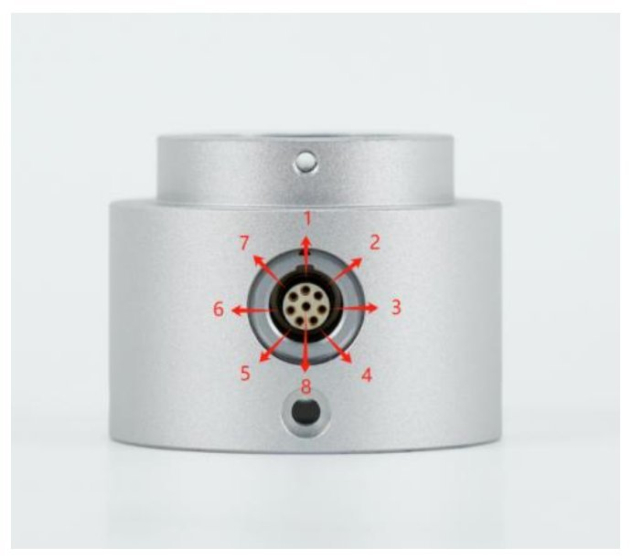
외부 케이블 문서
손의 외부 케이블은 CAN용과 RS485용 두 가지이며, 선 색깔별 기능은 다음과 같습니다.
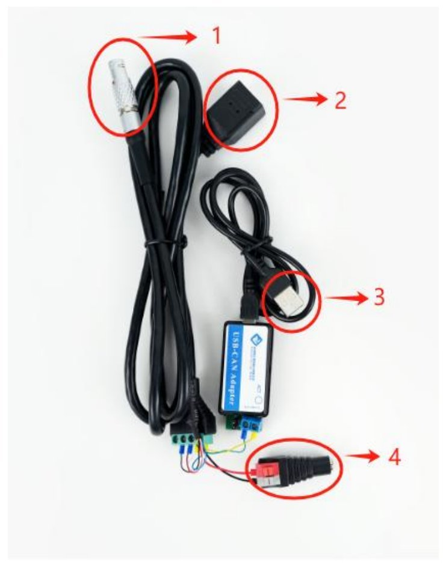
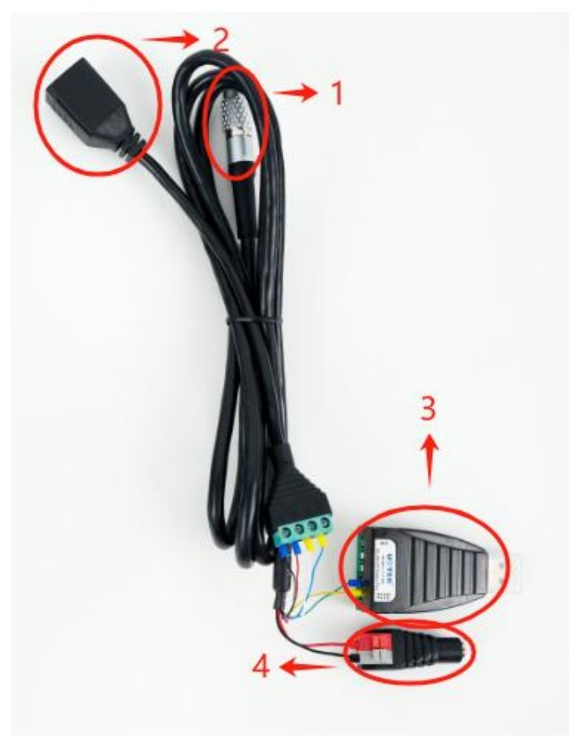
그림의 번호는 ① 항공 플러그 인터페이스(손 플랜지의 항공 플러그에 연결) · ② 네트워크 인터페이스(이더넷 케이블에 연결) · ③ CAN/RS485 인터페이스 · ④ 전원 인터페이스입니다.
| 선 | 기능 |
|---|---|
| 흰색 | TX+ (데이터 송신 +) |
| 파란색 | TX- (데이터 송신 −) |
| 빨간색 (가는 선) | RX+ (데이터 수신 +) |
| 검은색 (가는 선) | RX- (데이터 수신 −) |
| 노란색 | 485_A/CAN_H |
| 초록색 | 485_B/CAN_L |
| 빨간색 (굵은 선) | VCC (24 V) |
| 검은색 (굵은 선) | GND |
통신 방식 문서
- RS485: 별도 변환 회로를 쓰면 손 254대를 한 버스에 병렬로 연결할 수 있습니다.
- CAN: 여러 대(이론상 최대 16383대)를 한 버스에 병렬로 연결할 수 있습니다.
- Modbus TCP: IP 주소와 포트 번호로 손을 제어합니다. 기본 IP 주소는 192.168.11.210, 포트 번호는 6000입니다.
같은 버스에 연결한 손은 통신으로 구별해 제어할 수 있도록 ID를 서로 다르게 정해야 합니다. 손의 통신 명령과 레지스터는 제품 사용자에게 공개되어 있습니다. 위 인터페이스로 손을 개발 PC(컨트롤러나 일반 컴퓨터)에 연결하면, PC나 임베디드 컨트롤러에서 손의 파라미터 설정 · 동작 제어 등을 할 수 있습니다.
RS485 · CAN 프로토콜
상위 시스템은 손 내부 레지스터를 읽고 써서 손의 상태를 확인하고 손을 제어합니다. RS485는 전용 프레임을, CAN은 확장 식별자에 주소를 담는 데이터 프레임을 씁니다. 문서
통신 프로토콜 개요 문서
주 제어 장치(MCU)는 손 내부 레지스터를 읽고 써서 손의 상태를 확인하고 손을 제어합니다.
- 레지스터 읽기: 상위 시스템이 손 내부 레지스터 값을 읽습니다. 그룹 단위로 읽을 수 있으며, 그룹은 주소가 이어진 여러 레지스터를 말합니다. 상위 시스템이 읽기 명령(레지스터 그룹의 시작 주소 · 길이 등)을 보내면, 손은 명령을 받아 검사에 이상이 없을 때 그 레지스터의 데이터를 상위 시스템에 돌려줍니다.
- 레지스터 쓰기: 상위 시스템이 손 내부 레지스터에 데이터를 씁니다. 그룹 단위로 쓸 수도 있습니다. 상위 시스템이 쓰기 명령(레지스터 그룹의 시작 주소와 쓸 데이터)을 보내면, 손은 명령을 받아 검사에 이상이 없을 때 확인 신호를 상위 시스템에 돌려줍니다.
RS485 레지스터 읽기 · 쓰기 문서
RS485 통신 파라미터는 115200 bps · 데이터 비트 8 · 정지 비트 1 · 패리티 없음입니다.
레지스터 읽기
읽기 명령 프레임 형식은 아래와 같습니다. Address는 읽을 레지스터의 시작 주소, Hands_ID는 손 ID, Address_L은 Address의 하위 8비트, Address_H는 상위 8비트,
Register_Length는 읽을 레지스터의 길이(단위: 바이트)입니다. Checksum은 프레임 헤더를 뺀 나머지 데이터(체크섬 앞까지)를 모두 더한 값의 하위 바이트입니다.
| 바이트 | 값 | 설명 |
|---|---|---|
| byte[0] | 0xEB | 패킷 헤더 |
| byte[1] | 0x90 | 패킷 헤더 |
| byte[2] | Hands_ID | 손 ID |
| byte[3] | 0x04 | 프레임 데이터 길이 |
| byte[4] | 0x11 | 레지스터 읽기 |
| byte[5] | Address_L | 레지스터 시작 주소의 하위 8비트 |
| byte[6] | Address_H | 레지스터 시작 주소의 상위 8비트 |
| byte[7] | Register_Length | 읽을 레지스터 길이 |
| byte[8] | Checksum | 체크섬 |
손은 읽기 명령에 다음 응답 프레임을 돌려줍니다.
| 바이트 | 값 | 설명 |
|---|---|---|
| byte[0] | 0x90 | 패킷 헤더 |
| byte[1] | 0xEB | 패킷 헤더 |
| byte[2] | Hands_ID | 손 ID |
| byte[3] | Register_Length+3 | 프레임 데이터 길이 |
| byte[4] | 0x11 | 레지스터 읽기 명령에 대한 응답 프레임 |
| byte[5] | Address_L | 레지스터 시작 주소의 하위 8비트 |
| byte[6] | Address_H | 레지스터 시작 주소의 상위 8비트 |
| byte[7] | Data[0] | 레지스터 값 |
| … | … | |
| byte[7+Register_Length-1] | Data[Register_Length-1] | |
| byte[7+Register_Length] | Checksum | 체크섬 |
읽기 예: 자유도별 실제 각도
ID가 1인 손에서 자유도별 실제 각도를 읽는 예입니다. 실제 각도는 시작 주소 1546(0x060A), 길이 12바이트(0x0C)인 레지스터 그룹에 있습니다.
| 바이트 | 값 | 설명 |
|---|---|---|
| byte[0] | 0xEB | 패킷 헤더 |
| byte[1] | 0x90 | 패킷 헤더 |
| byte[2] | 0x01 | 손 ID: 1 |
| byte[3] | 0x04 | 프레임 데이터 길이 |
| byte[4] | 0x11 | 레지스터 읽기 |
| byte[5] | 0x0A | 레지스터 시작 주소의 하위 8비트 |
| byte[6] | 0x06 | 레지스터 시작 주소의 상위 8비트 |
| byte[7] | 0x0C | 읽을 레지스터 길이 |
| byte[8] | 0x32 | 체크섬 |
손은 이 명령에 다음 응답 프레임을 돌려줍니다.
| 바이트 | 값 | 설명 |
|---|---|---|
| byte[0] | 0x90 | 패킷 헤더 |
| byte[1] | 0xEB | 패킷 헤더 |
| byte[2] | 0x01 | 손 ID |
| byte[3] | 0x0F | 프레임 데이터 길이: 12 + 3 |
| byte[4] | 0x11 | 레지스터 읽기 명령에 대한 응답 프레임 |
| byte[5] | 0x0A | 레지스터 시작 주소의 하위 8비트 |
| byte[6] | 0x06 | 레지스터 시작 주소의 상위 8비트 |
| byte[7] · byte[8] | 0x64 0x00 | 정수 100 (0x0064) |
| byte[9] · byte[10] | 0x64 0x00 | 정수 100 (0x0064) |
| byte[11] · byte[12] | 0x64 0x00 | 정수 100 (0x0064) |
| byte[13] · byte[14] | 0x64 0x00 | 정수 100 (0x0064) |
| byte[15] · byte[16] | 0xD0 0x07 | 정수 2000 (0x07D0) |
| byte[17] · byte[18] | 0x00 0x00 | 정수 0 (0x0000) |
| byte[19] | 0x98 | 체크섬 |
이 응답에서 자유도별 실제 값 100, 100, 100, 100, 2000, 0을 얻습니다. 보내고 받는 바이트를 차례로 적으면 다음과 같습니다.
# 보냄: 실제 각도 읽기 (ID 1, 주소 0x060A, 12바이트) EB 90 01 04 11 0A 06 0C 32 # 받음: 100, 100, 100, 100, 2000, 0 90 EB 01 0F 11 0A 06 64 00 64 00 64 00 64 00 D0 07 00 00 98
레지스터 쓰기
쓰기 명령 프레임 형식은 아래와 같습니다. Data[0] ~ Data[Register_Length-1]이 레지스터에 쓸 데이터입니다.
| 바이트 | 값 | 설명 |
|---|---|---|
| byte[0] | 0xEB | 패킷 헤더 |
| byte[1] | 0x90 | 패킷 헤더 |
| byte[2] | Hands_ID | 손 ID |
| byte[3] | Register_Length+3 | 프레임 데이터 길이 |
| byte[4] | 0x12 | 레지스터 쓰기 명령 플래그 |
| byte[5] | Address_L | 레지스터 시작 주소의 하위 8비트 |
| byte[6] | Address_H | 레지스터 시작 주소의 상위 8비트 |
| byte[7] | Data[0] | 레지스터에 쓸 데이터 |
| … | … | |
| byte[7+Register_Length-1] | Data[Register_Length-1] | |
| byte[7+Register_Length] | checksum | 체크섬 |
손은 쓰기 명령에 다음 응답 프레임을 돌려줍니다.
| 바이트 | 값 | 설명 |
|---|---|---|
| byte[0] | 0x90 | 패킷 헤더 |
| byte[1] | 0xEB | 패킷 헤더 |
| byte[2] | Hands_ID | 손 ID |
| byte[3] | 4 | 프레임 데이터 길이 |
| byte[4] | 0x12 | 레지스터 쓰기 명령에 대한 응답 프레임 |
| byte[5] | Address_L | 레지스터 시작 주소의 하위 8비트 |
| byte[6] | Address_H | 레지스터 시작 주소의 상위 8비트 |
| byte[7] | 1 | |
| byte[8] | checksum | 체크섬 |
파라미터를 저장할 때(레지스터 SAVE에 1을 쓸 때)는 손이 응답 프레임을 돌려주고 1초 뒤에 결과 정보 프레임을 하나 더 돌려줍니다.
| 바이트 | 값 | 설명 |
|---|---|---|
| byte[0] | 0x90 | 패킷 헤더 |
| byte[1] | 0xEB | 패킷 헤더 |
| byte[2] | Hands_ID | 손 ID |
| byte[3] | 4 | 프레임 데이터 길이 |
| byte[4] | 0x12 | 레지스터 쓰기 명령에 대한 응답 프레임 |
| byte[5] | 0xED | 레지스터 SAVE 시작 주소의 하위 8비트 |
| byte[6] | 0x03 | 레지스터 SAVE 시작 주소의 상위 8비트 |
| byte[7] | ** | 0x00 저장 성공, 0xFF 저장 실패 |
| byte[8] | checksum | 체크섬 |
쓰기 예: 자유도별 각도 설정
ID가 1인 손의 자유도별 각도를 100, 100, 100, 100, 2000, 0으로 정하는 예입니다. 값을 쓸 곳은 각도 쓰기 레지스터 그룹이며, 이 그룹의 시작 주소는 1486(0x05CE), 길이는 12바이트(0x0C)입니다.
| 바이트 | 값 | 설명 |
|---|---|---|
| byte[0] | 0xEB | 패킷 헤더 |
| byte[1] | 0x90 | 패킷 헤더 |
| byte[2] | 0x01 | 손 ID |
| byte[3] | 0x0F | 프레임 데이터 길이: 12 + 3 |
| byte[4] | 0x12 | 레지스터 쓰기 명령 플래그 |
| byte[5] | 0xCE | 레지스터 시작 주소의 하위 8비트 |
| byte[6] | 0x05 | 레지스터 시작 주소의 상위 8비트 |
| byte[7] · byte[8] | 0x64 0x00 | 정수 100 (0x0064) |
| byte[9] · byte[10] | 0x64 0x00 | 정수 100 (0x0064) |
| byte[11] · byte[12] | 0x64 0x00 | 정수 100 (0x0064) |
| byte[13] · byte[14] | 0x64 0x00 | 정수 100 (0x0064) |
| byte[15] · byte[16] | 0xD0 0x07 | 정수 2000 (0x07D0) |
| byte[17] · byte[18] | 0x00 0x00 | 정수 0 (0x0000) |
| byte[19] | 0x5C | 체크섬 |
손은 이 명령에 다음 응답 프레임을 돌려줍니다.
| 바이트 | 값 | 설명 |
|---|---|---|
| byte[0] | 0x90 | 패킷 헤더 |
| byte[1] | 0xEB | 패킷 헤더 |
| byte[2] | 0x01 | 손 ID |
| byte[3] | 0x04 | 프레임 데이터 길이 |
| byte[4] | 0x12 | 레지스터 쓰기 명령에 대한 응답 프레임 |
| byte[5] | 0xCE | 레지스터 시작 주소의 하위 8비트 |
| byte[6] | 0x05 | 레지스터 시작 주소의 상위 8비트 |
| byte[7] | 0x01 | |
| byte[8] | 0xEB | 체크섬 |
# 보냄: 각도 설정 (ID 1, 주소 0x05CE, 12바이트) = 100, 100, 100, 100, 2000, 0 EB 90 01 0F 12 CE 05 64 00 64 00 64 00 64 00 D0 07 00 00 5C # 받음 90 EB 01 04 12 CE 05 01 EB
읽기 · 쓰기 예의 다섯째 값 2000은 6장의 각도 범위(설정 −1, 0 ~ 1000 · 실제 0 ~ 1000)를 벗어납니다. 원문 예를 그대로 옮겼으며, 체크섬도 이 값으로 계산한 것과 맞습니다.
CAN 레지스터 읽기 · 쓰기 문서
기본 보율은 1000K입니다. 확장 식별자와 데이터 프레임 형식을 쓰며, 표준 식별자와 리모트 프레임은 쓰지 않습니다. 확장 식별자는 29비트이며, 각 비트의 뜻은 하위 비트부터 다음과 같습니다.
- bit0 ~ 13:
Hand_ID. 최대 16383대를 지원합니다. - bit14 ~ 25: 읽거나 쓸 레지스터의 시작 주소
- bit26 ~ 28: 읽기 · 쓰기 플래그. 0은 손 레지스터 읽기, 1은 손 레지스터 쓰기, 4는 손목 레지스터 읽기, 5는 손목 레지스터 쓰기입니다.
- bit29 ~ 31: 예약 플래그
| 식별자 | bit 31-29 | bit 26-28 (W/R) | bit 14-25 | bit 13-0 |
|---|---|---|---|---|
| 뜻 | 예약 | 0: R — 손 레지스터 읽기 1: W — 손 레지스터 쓰기 4: R — 손목 레지스터 읽기 5: W — 손목 레지스터 쓰기 | 레지스터 주소 | Hand_ID |
레지스터 읽기
| 식별자 | bit 31-29 | bit 26-28 | bit 14-25 | bit 13-0 |
|---|---|---|---|---|
| 뜻 | 예약 | 0 | 주소 | Hand_ID |
데이터 길이는 1바이트이고, 데이터 내용은 읽을 레지스터 데이터의 길이입니다. 손은 이 명령을 받아 올바르게 해석하면 다음 식별자로 응답합니다.
| 식별자 | bit 31-29 | bit 26-28 | bit 14-25 | bit 13-0 |
|---|---|---|---|---|
| 뜻 | 예약 | 0 | 주소 | Hand_ID |
데이터 길이는 돌려주는 레지스터 데이터의 길이이고, 데이터 내용은 레지스터 데이터입니다.
읽기 예: 검지의 현재 실제 각도
ID가 1인 손의 검지 현재 실제 각도를 읽으려면 다음 프레임을 CAN 버스에 보냅니다. 식별자는 2진수로 0000 0001 1000 0100 0000 0000 0000 0001입니다.
| bit 31-29 | bit 26-28 | bit 14-25 | bit 13-0 |
|---|---|---|---|
| 0 | 0 | 검지 실제 각도(읽기) 주소 1552, 2진수 011000010000 | 1 |
데이터 길이는 1, 데이터 내용은 2입니다. 검지의 현재 실제 각도는 정수형이며 데이터 길이가 2바이트이기 때문입니다.
손은 같은 식별자(2진수 0000 0001 1000 0100 0000 0000 0000 0001)로 다음 프레임을 돌려줍니다.
| bit 31-29 | bit 26-28 | bit 14-25 | bit 13-0 |
|---|---|---|---|
| 0 | 0 | 검지 실제 각도(읽기) 주소 1552, 2진수 011000010000 | 1 |
데이터 길이는 2이고, 데이터 내용은 아래와 같습니다. 검지의 현재 실제 각도는 정수이므로 이 데이터를 정수로 바꿉니다 (하위 바이트가 먼저, 상위 바이트가 뒤). 상위 · 하위 바이트를 맞바꾸면 16진수 0x01F4, 10진수 500이 됩니다. 즉 검지의 현재 실제 각도는 500입니다.
| byte0 | byte1 |
|---|---|
| 0xF4 | 0x01 |
# 보냄: 식별자 0x01840001 (0 << 26 | 1552 << 14 | 1), 데이터 길이 1 02 # 받음: 식별자 0x01840001, 데이터 길이 2 → 0x01F4 = 500 F4 01
레지스터 쓰기
| 식별자 | bit 31-29 | bit 26-28 | bit 14-25 | bit 13-0 |
|---|---|---|---|---|
| 뜻 | 예약 | 1 | 주소 | Hand_ID |
데이터 길이는 레지스터에 쓸 데이터의 길이이고, 데이터 내용은 레지스터에 쓸 데이터입니다. 손은 이 명령을 받아 올바르게 해석하면 다음 식별자로 응답합니다.
| 식별자 | bit 31-29 | bit 26-28 | bit 14-25 | bit 13-0 |
|---|---|---|---|---|
| 뜻 | 예약 | 1 | 주소 | Hand_ID |
데이터 길이는 1입니다.
쓰기 예: 검지 각도를 600으로
ID가 1인 손의 검지 각도를 600으로 정하려면 다음 프레임을 CAN 버스에 보냅니다. 식별자는 2진수로 0000 0101 0111 0101 0000 0000 0000 0001입니다.
| bit 31-29 | bit 26-28 | bit 14-25 | bit 13-0 |
|---|---|---|---|
| 0 | 1 | 검지 각도(쓰기) 주소 1492, 2진수 010111010100 | 1 |
데이터 길이는 2이고, 데이터 내용은 아래와 같습니다. 검지 각도(쓰기)는 정수이므로 정수 데이터를 상위 · 하위 바이트로 나눈 뒤 맞바꿉니다. 600(0x0258)은 다음 데이터가 됩니다.
| byte0 | byte1 |
|---|---|
| 0x58 | 0x02 |
손은 같은 식별자(2진수 0000 0101 0111 0101 0000 0000 0000 0001)로 다음 프레임을 돌려줍니다.
| bit 31-29 | bit 26-28 | bit 14-25 | bit 13-0 |
|---|---|---|---|
| 0 | 1 | 검지 각도(쓰기) 주소 1492, 2진수 01 0111 0101 00 | 1 |
데이터 길이는 1입니다.
# 보냄: 식별자 0x05750001 (1 << 26 | 1492 << 14 | 1), 데이터 길이 2 → 600 58 02 # 받음: 식별자 0x05750001, 데이터 길이 1
원문은 쓰기 응답 식별자 표(표 21)의 제목을 'Read Register Response'로, 쓰기 명령 표(표 22)의 제목을 'Write Register Response Frame'으로 적었습니다. 이 책은 내용에 맞는 제목을 붙였습니다. 16진 식별자(0x01840001 · 0x05750001)는 원문의 2진수를 옮겨 적은 것입니다.
Modbus RTU · Modbus TCP
손은 Modbus 기능 코드 03(보유 레지스터 읽기) · 06(단일 레지스터 쓰기) · 16(0x10, 다중 레지스터 쓰기)을 지원합니다. RTU는 RS485에서, TCP는 이더넷에서 씁니다. 문서
Modbus RTU 프로토콜 문서
Modbus 프로토콜은 마스터-슬레이브 요청 · 응답 방식으로 통신합니다. 프로토콜 프레임은 기능 코드 · 데이터 필드 · 순환 중복 검사(CRC)로 이루어집니다. 손은 보유 레지스터 읽기(기능 코드 0x03) · 단일 레지스터 프리셋(0x06) · 다중 레지스터 프리셋(0x10)을 지원합니다.
보유 레지스터 읽기 (0x03)
| 필드 | 값 |
|---|---|
| 슬레이브 국 주소 | 0x01 |
| 기능 코드 | 0x03 |
| 시작 레지스터 (상위 바이트) | 0x6B |
| 시작 레지스터 (하위 바이트) | 0x00 |
| 레지스터 수 (상위 바이트) | 0x00 |
| 레지스터 수 (하위 바이트) | 0x02 |
| CRC | XXXX |
| 필드 | 값 |
|---|---|
| 슬레이브 국 주소 | 0x01 |
| 바이트 수 | 0x04 |
| 0x006B 레지스터 (상위 바이트) | 0x00 |
| 0x006B 레지스터 (하위 바이트) | 0x01 |
| 0x006C 레지스터 (상위 바이트) | 0x00 |
| 0x006C 레지스터 (하위 바이트) | 0x02 |
| CRC | XXXX |
질의: 슬레이브 국 1번(0x01)의 보유 레지스터를 읽습니다. 시작 주소는 0x006B, 레지스터 수는 0x0002, 끝 주소는 0x006B+2-1=0x006C입니다. 즉 슬레이브 국 17번의 보유 레지스터 0x006B ~ 0x006C, 모두 두 개를 읽습니다.
응답: 슬레이브 국 1번(0x01)의 보유 레지스터 0x006B ~ 0x006C 두 개를 돌려줍니다. 0x006B 레지스터 값은 0x0001, 0x0062 레지스터 값은 0x0002입니다.
단일 레지스터 프리셋 (0x06)
| 필드 | 값 |
|---|---|
| 슬레이브 국 주소 | 0x01 |
| 기능 코드 | 0x06 |
| 시작 레지스터 (상위 바이트) | 0x00 |
| 시작 레지스터 (하위 바이트) | 0x6B |
| 데이터 내용 (상위 바이트) | 0x10 |
| 데이터 내용 (하위 바이트) | 0x00 |
| CRC | XXXX |
| 필드 | 값 |
|---|---|
| 슬레이브 국 주소 | 0x01 |
| 시작 레지스터 (상위 바이트) | 0x00 |
| 시작 레지스터 (하위 바이트) | 0x00 |
| 데이터 내용 (상위 바이트) | 0x00 |
| 데이터 내용 (하위 바이트) | 0x00 |
| CRC | XXXX |
질의: 슬레이브 국 1번(0x01)의 보유 레지스터를 설정합니다. 레지스터 주소는 0x006B, 데이터 내용은 0x1000입니다.
다중 레지스터 프리셋 (0x10)
| 필드 | 값 |
|---|---|
| 슬레이브 국 주소 | 0x11 |
| 기능 코드 | 0x10 |
| 시작 레지스터 (상위 바이트) | 0x00 |
| 시작 레지스터 (하위 바이트) | 0x01 |
| 레지스터 수 (상위 바이트) | 0x00 |
| 레지스터 수 (하위 바이트) | 0x02 |
| 바이트 수 | 0x04 |
| 데이터 (상위 바이트) | 0x00 |
| 데이터 (하위 바이트) | 0x0A |
| 데이터 (상위 바이트) | 0x01 |
| 데이터 (하위 바이트) | 0x02 |
| CRC | XXXX |
| 필드 | 값 |
|---|---|
| 슬레이브 국 주소 | 0x01 |
| 기능 코드 | 0x10 |
| 시작 레지스터 (상위 바이트) | 0x00 |
| 레지스터 수 (상위 바이트) | 0x00 |
| 레지스터 수 (하위 바이트) | 0x02 |
| CRC | XXXX |
질의: 슬레이브 국 1번(0x01)의 보유 레지스터를 설정합니다. 레지스터 시작 주소는 0x0001, 레지스터 수는 0x0002, 데이터 내용의 바이트 수는 0x04, 데이터 내용은 0x000A와 0x0102입니다.
표와 설명을 원문 그대로 옮겼습니다. 원문에서 앞뒤가 맞지 않는 곳은 다음과 같습니다.
- 0x03 질의(표 25): 시작 주소가 0x006B인데 상위 바이트 칸이 0x6B, 하위 바이트 칸이 0x00입니다. 설명의 '슬레이브 국 17번'은 1번(0x01)이어야 합니다.
- 0x03 응답(표 26): 기능 코드 칸이 없습니다. 설명의 '0x0062 레지스터'는 0x006C여야 합니다.
- 0x06 응답(표 28): 기능 코드 칸이 없고 값이 모두 0x00입니다. Modbus 규격의 0x06 응답은 질의의 주소와 값을 그대로 돌려줍니다.
- 0x10 질의(표 29): 슬레이브 국 주소가 0x11인데 설명은 1번(0x01)입니다. 0x10 응답(표 30)에는 시작 레지스터 하위 바이트 칸이 없습니다.
Modbus TCP 프로토콜 문서
이더넷 변환 모듈은 Modbus TCP 프로토콜을 씁니다. Modbus TCP는 Schneider가 내놓은 이더넷 TCP/IP 기반의 Modbus 프로토콜로, 마스터 · 슬레이브 통신 방식을 쓰는 응용 계층의 메시지 전송 프로토콜입니다. Modbus TCP 데이터 프레임은 MBAP와 PDU 두 부분으로 나뉩니다.
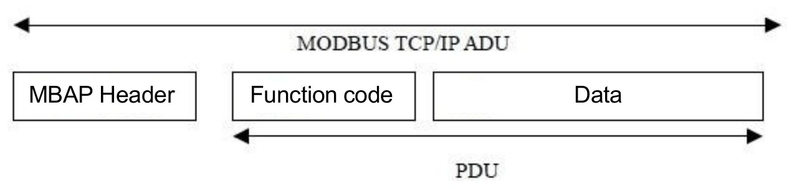
MBAP 헤더
| 필드 | 길이 | 설명 | 클라이언트 | 서버 |
|---|---|---|---|---|
| 트랜잭션 식별자Transaction Identifier | 2 byte | MODBUS 요청 · 응답 트랜잭션의 식별자 | 클라이언트가 정함 | 받은 요청에서 서버가 복사 |
| 프로토콜 식별자Protocol Identifier | 2 byte | 0 = MODBUS 프로토콜 | 클라이언트가 정함 | 받은 요청에서 서버가 복사 |
| 길이Length | 2 byte | 뒤따르는 바이트 수 | 클라이언트가 정함 (요청) | 서버가 정함 (응답) |
| 유닛 식별자Unit Identifier | 1 byte | 직렬 링크나 다른 버스에 있는 원격 슬레이브 장치의 식별자 | 클라이언트가 정함 | 받은 요청에서 서버가 복사 |
길이(Length)는 뒤따르는 유닛 식별자 · 기능 코드 · 데이터의 바이트 수를 모두 센 값입니다. 유닛 식별자는 0xFF로 설정합니다. TCP는 IP 주소로 목적지를 구분하므로 유닛 식별자를 쓰지 않습니다.
PDU 프레임 구조
PDU는 기능 코드와 데이터로 이루어집니다. 기능 코드는 1바이트이고, 데이터 길이는 쓰는 기능에 따라 다릅니다. Modbus 기능 코드 여덟 가지 가운데 이 손은 03 · 06 · 16 세 가지를 씁니다.
| 코드 | 이름 | 비트 · 워드 동작 | 동작 개수 |
|---|---|---|---|
| 01 | 코일 상태 읽기 | 비트 | 단일 · 다중 |
| 02 | 이산 입력 상태 읽기 | 비트 | 단일 · 다중 |
| 03 | 보유 레지스터 읽기 | 워드 | 단일 · 다중 |
| 04 | 입력 레지스터 읽기 | 워드 | 단일 · 다중 |
| 05 | 코일 상태 쓰기 | 비트 | 단일 |
| 06 | 단일 보유 레지스터 쓰기 | 워드 | 단일 |
| 15 | 다중 코일 쓰기 | 비트 | 다중 |
| 16 | 다중 보유 레지스터 쓰기 | 워드 | 다중 |
레지스터 읽기: 기능 코드 03 (0x03)
| 항목 | 길이 | 값 |
|---|---|---|
| 기능 코드 | 1 byte | 0x03 |
| 시작 주소 | 2 bytes | 0x0000 ~ 0xFFFF |
| 레지스터 수 | 2 bytes | 1 ~ 125 (0x7D) |
| 항목 | 길이 | 값 |
|---|---|---|
| 기능 코드 | 1 byte | 0x03 |
| 바이트 수 | 1 byte | 2×N |
| 레지스터 수 | N×2 bytes |
보유 레지스터 108 ~ 110을 읽는 요청의 예입니다. 레지스터 108의 내용은 16진수 두 바이트 02 2B, 10진수 555입니다. 레지스터 109와 110의 내용은 각각 16진수 00 00과 00 64, 10진수 0과 100입니다.
| 요청 필드 | 16진 | 응답 필드 | 16진 |
|---|---|---|---|
| 기능 | 03 | 기능 | 03 |
| 시작 주소 상위 | 00 | 바이트 수 | 06 |
| 시작 주소 하위 | 6B | 레지스터 값 상위 (108) | 02 |
| 레지스터 수 상위 | 00 | 레지스터 값 하위 (108) | 2B |
| 레지스터 수 하위 | 03 | 레지스터 값 상위 (109) | 00 |
| 레지스터 값 하위 (109) | 00 | ||
| 레지스터 값 상위 (110) | 00 | ||
| 레지스터 값 하위 (110) | 64 |
# PDU 요청 · 응답 (MBAP 헤더 뒤)
03 00 6B 00 03
03 06 02 2B 00 00 00 64
단일 레지스터 쓰기: 기능 코드 06 (0x06)
| 항목 | 길이 | 값 |
|---|---|---|
| 기능 코드 | 1 byte | 0x06 |
| 레지스터 주소 | 2 bytes | 0x0000 ~ 0xFFFF |
| 레지스터 값 | 2 bytes | 0x0000 ~ 0xFFFF |
| 항목 | 길이 | 값 |
|---|---|---|
| 기능 코드 | 1 byte | 0x06 |
| 레지스터 주소 | 2 bytes | 0x0000 ~ 0xFFFF |
| 레지스터 값 | N×2 bytes | 0x0000 ~ 0xFFFF |
레지스터 2에 16진수 00 03을 쓰는 요청의 예입니다.
| 요청 필드 | 16진 | 응답 필드 | 16진 |
|---|---|---|---|
| 기능 | 06 | 기능 | 06 |
| 레지스터 주소 상위 | 00 | 출력 주소 상위 | 00 |
| 레지스터 주소 하위 | 01 | 출력 주소 하위 | 01 |
| 레지스터 값 상위 | 00 | 출력 값 상위 | 00 |
| 레지스터 값 하위 | 03 | 출력 값 하위 | 03 |
# PDU 요청 · 응답
06 00 01 00 03
06 00 01 00 03
다중 레지스터 쓰기: 기능 코드 16 (0x10)
| 항목 | 길이 | 값 |
|---|---|---|
| 기능 코드 | 1 byte | 0x10 |
| 시작 주소 | 2 bytes | 0x0000 ~ 0xFFFF |
| 레지스터 수 | 2 bytes | 0x0001 ~ 0x0078 |
| 바이트 수 | 1 byte | 2×N |
| 레지스터 값 | N×2 bytes |
| 항목 | 길이 | 값 |
|---|---|---|
| 기능 코드 | 1 byte | 0x10 |
| 시작 주소 | 2 bytes | 0x0000 ~ 0xFFFF |
| 레지스터 수 | 2 bytes | 1 ~ 123 (0x7B) |
레지스터 2부터 레지스터 두 개에 16진수 00 0A와 01 02를 쓰는 요청의 예입니다.
| 요청 필드 | 16진 | 응답 필드 | 16진 |
|---|---|---|---|
| 기능 | 10 | 기능 | 10 |
| 시작 주소 상위 | 00 | 시작 주소 상위 | 00 |
| 시작 주소 하위 | 01 | 시작 주소 하위 | 01 |
| 레지스터 수 상위 | 00 | 레지스터 수 상위 | 00 |
| 레지스터 수 하위 | 02 | 레지스터 수 하위 | 02 |
| 바이트 수 | 04 | ||
| 레지스터 값 상위 | 00 | ||
| 레지스터 값 하위 | 0A | ||
| 레지스터 값 상위 | 01 | ||
| 레지스터 값 하위 | 02 |
# PDU 요청 · 응답
10 00 01 00 02 04 00 0A 01 02
10 00 01 00 02
위 세 예는 Modbus 규격서의 예와 같아서, 레지스터 번호는 1부터, PDU의 주소는 0부터 셉니다. 레지스터 108은 주소 0x006B(107), 레지스터 2는 주소 0x0001입니다.
- 0x03 응답(표 34)의 셋째 줄 이름이 '레지스터 수'로 되어 있으나, 내용(N×2 bytes)은 레지스터 값입니다.
- 0x06 응답(표 37)의 레지스터 값 길이가 'N×2 bytes'로 되어 있으나, 0x06은 레지스터 하나(2바이트)를 씁니다.
- 0x10의 레지스터 수가 요청(표 39)은 0x0001 ~ 0x0078(120), 응답(표 40)은 1 ~ 123(0x7B)으로 서로 다릅니다.
레지스터
사용자에게 공개된 손의 레지스터와 각 레지스터의 뜻 · 범위를 설명합니다. 레지스터 여섯 개로 된 그룹은 모두 새끼손가락 · 약지 · 중지 · 검지 · 엄지 굽힘 · 엄지 회전 순서입니다. 문서
레지스터 목록 문서
| 주소 | 뜻 | 길이 | 권한 |
|---|---|---|---|
| 1000 | 손 ID | 1 byte | W/R |
| 1002 | 보율 설정 | 1 byte | W/R |
| 1004 | 오류 해제 | 1 byte | W/R |
| 1005 | Flash에 데이터 저장 | 1 byte | W/R |
| 1006 | 공장 기본값 복원 | 1 byte | W/R |
| 1009 | 힘 센서 보정 | 1 byte | W/R |
| 1032 | 자유도별 전원 투입 속도 설정값 | 6 short (12 byte) | W/R |
| 1044 | 자유도별 전원 투입 힘 제어 임계값 설정값 | 6 short (12 byte) | W/R |
| 1474 | 자유도별 액추에이터 위치 설정값 | 6 short (12 byte) | W/R |
| 1486 | 자유도별 각도 설정값 | 6 short (12 byte) | W/R |
| 1498 | 자유도별 힘 제어 임계값 설정값 | 6 short (12 byte) | W/R |
| 1522 | 자유도별 속도 설정값 | 6 short (12 byte) | W/R |
| 1534 | 자유도별 액추에이터 실제 위치 | 6 short (12 byte) | R |
| 1546 | 자유도별 실제 각도 | 6 short (12 byte) | R |
| 1582 | 손가락별 실제 힘 | 6 short (12 byte) | R |
| 1594 | 자유도별 액추에이터 전류 | 6 short (12 byte) | R |
| 1606 | 자유도별 액추에이터 오류 코드 | 6 byte | R |
| 1612 | 자유도별 상태 정보 | 6 byte | R |
| 1618 | 자유도별 액추에이터 온도 | 6 byte | R |
| 1625 | 손가락 동작 모드 설정 | 6 byte | W/R |
| 1700 | IP 주소 첫째 자리. 기본값 192, 범위 0 ~ 255, 전원을 다시 넣은 뒤 적용 | 1 byte | W/R |
| 1701 | IP 주소 둘째 자리. 기본값 168, 범위 0 ~ 255, 전원을 다시 넣은 뒤 적용 | 1 byte | W/R |
| 1702 | IP 주소 셋째 자리. 기본값 11, 범위 0 ~ 255, 전원을 다시 넣은 뒤 적용 | 1 byte | W/R |
| 1703 | IP 주소 넷째 자리. 기본값 210, 범위 0 ~ 255, 전원을 다시 넣은 뒤 적용 | 1 byte | W/R |
아래 '목표 제스처 번호'와 사용자 정의 제스처 레지스터 USER_DEF_ANGLE (K, m)은 원문 목록에 주소가 없습니다. 반대로 1612 '자유도별 상태 정보'는 목록에만 있고 설명 절이 없습니다.
시스템 설정 문서
손 ID (1000)
기본값 1, 범위 1 ~ 254이며 저장할 수 있습니다. 한 버스에 손을 여러 대 연결할 때는 손마다 ID를 따로 정해야 합니다.
보율 설정 (1002)
| 인터페이스 | 기본값 · 범위 | 값과 보율 |
|---|---|---|
| RS485 | 기본값 0, 범위 0 ~ 3, 저장 안 됨 | 0: 115200 · 1: 57600 · 2: 19200 · 3: 921600 |
| CAN | 기본값 0, 범위 0 ~ 1, 저장 안 됨 | 0: 1000K · 1: 500K |
오류 해제 (1004)
기본값 0, 범위 0 ~ 1이며 저장되지 않습니다. 1을 쓰면 해제할 수 있는 오류(구속 · 과전류 · 동작 이상 · 통신 오류 같은 액추에이터 오류)를 해제합니다.
액추에이터 과열 오류는 해제할 수 없습니다. 온도가 내려가면 저절로 해제됩니다.
Flash에 파라미터 저장 (1005)
기본값 0, 범위 0 ~ 1이며 저장되지 않습니다. 1을 쓰면 손이 현재 파라미터를 Flash에 씁니다. 저장한 파라미터는 전원이 꺼져도 사라지지 않습니다. RS485에서는 저장 결과 프레임이 따로 옵니다 (표 11).
공장 기본값 복원 (1006)
기본값 0, 범위 0 ~ 1이며 저장되지 않습니다. 1을 쓰면 손의 파라미터가 공장 기본값으로 돌아갑니다.
힘 센서 보정 (1009)
1로 설정하면 손이 힘 센서 보정을 시작합니다.
보정하는 동안에는 손바닥을 편 상태로 두고, 손가락이 어떤 물체에도 닿지 않게 하십시오.
목표 제스처 번호
기본값 0xFF, 범위 1 ~ 40이며 저장되지 않습니다. 이 레지스터 값을 바꾸면 손이 그 번호의 제스처를 취합니다.
1 ~ 13번은 출하 전에 저장된 고정 제스처(손 펴기 · 두 손가락 맞대기 · 주먹 쥐기 등)이고, 14 ~ 40번은 사용자가 고치고 저장할 수 있는 사용자 정의 제스처입니다. 사용자 정의 제스처의 데이터는 레지스터 USER_DEF_ANGLE (K, m)에 저장됩니다.
전원 투입 설정값 문서
자유도별 전원 투입 속도 (1032 ~ 1043)
이 그룹의 레지스터 여섯 개는 손 6자유도의 전원 투입 속도 설정값입니다. 이 값은 저장할 수 있어 전원을 꺼도 남습니다.
| 주소 | 설명 | 자료형 | 범위 |
|---|---|---|---|
| 1032-1033 | 새끼손가락 초기 전원 투입 속도 | short | 0 ~ 1000 |
| 1034-1035 | 약지 초기 전원 투입 속도 | short | 0 ~ 1000 |
| 1036-1037 | 중지 초기 전원 투입 속도 | short | 0 ~ 1000 |
| 1038-1039 | 검지 초기 전원 투입 속도 | short | 0 ~ 1000 |
| 1040-1041 | 엄지 굽힘 초기 전원 투입 속도 | short | 0 ~ 1000 |
| 1042-1043 | 엄지 회전 초기 전원 투입 속도 | short | 0 ~ 1000 |
속도 값 1000은 무부하 상태의 손가락이 최대 각도에서 최소 각도까지 600 ms에 움직이는 속도입니다. 부하가 크면 실제 속도는 이보다 조금 느립니다.
자유도별 전원 투입 힘 제어 임계값 (1044 ~ 1055)
이 그룹의 레지스터 여섯 개는 손 6자유도의 전원 투입 힘 제어 임계값 설정값입니다. 이 값은 저장할 수 있어 전원을 꺼도 남습니다.
| 주소 | 설명 | 자료형 | 범위 |
|---|---|---|---|
| 1044-1045 | 새끼손가락 초기 전원 투입 힘 제어 | short | 0 ~ 3000 |
| 1046-1047 | 약지 초기 전원 투입 힘 제어 | short | 0 ~ 3000 |
| 1048-1049 | 중지 초기 전원 투입 힘 제어 | short | 0 ~ 3000 |
| 1050-1051 | 검지 초기 전원 투입 힘 제어 | short | 0 ~ 3000 |
| 1052-1053 | 엄지 굽힘 초기 전원 투입 힘 제어 | short | 0 ~ 3000 |
| 1054-1055 | 엄지 회전 초기 전원 투입 힘 제어 | short | 0 ~ 3000 |
이 레지스터 값은 그 손가락 끝이 낼 수 있는 쥐는 힘입니다. 예를 들어 약지의 전원 투입 힘 제어 임계값을 800으로 정하면 약지 끝이 800 g까지 쥐는 힘을 낼 수 있습니다. 물체에 닿는 부분이 손가락 끝이 아니면 낼 수 있는 쥐는 힘이 달라집니다. 쥐는 힘의 크기는 힘의 팔 길이에 따라 달라, 힘의 팔이 짧을수록 커집니다.
동작 설정값 문서
자유도별 액추에이터 위치 설정값 (1474 ~ 1485)
이 그룹의 레지스터 여섯 개는 손 6자유도의 액추에이터 위치 설정값입니다. 이 값은 저장할 수 없습니다.
| 주소 | 설명 | 자료형 | 범위 |
|---|---|---|---|
| 1474-1475 | 새끼손가락 액추에이터 위치 설정 | short | 0 ~ 2000 |
| 1476-1477 | 약지 액추에이터 위치 설정 | short | 0 ~ 2000 |
| 1478-1479 | 중지 액추에이터 위치 설정 | short | 0 ~ 2000 |
| 1480-1481 | 검지 액추에이터 위치 설정 | short | 0 ~ 2000 |
| 1482-1483 | 엄지 굽힘 액추에이터 위치 설정 | short | 0 ~ 2000 |
| 1484-1485 | 엄지 회전 액추에이터 위치 설정 | short | 0 ~ 2000 |
- 0: 액추에이터 최소 스트로크로, 손가락 최대 각도(손가락을 편 상태)에 해당합니다.
- 2000: 액추에이터 최대 스트로크로, 손가락 최소 각도(손가락을 굽힌 상태)에 해당합니다.
- −1: 액추에이터가 움직이지 않습니다.
이 레지스터 그룹으로 손가락의 위치 각도를 정하는 것은 권장하지 않습니다.
자유도별 각도 설정값 (1486 ~ 1497)
이 그룹의 레지스터 여섯 개는 손 6자유도의 각도 설정값입니다. 어느 자유도의 각도 값을 0 ~ 1000 안의 값으로 정하면 그 손가락이 곧바로 움직이고, −1로 정하면 그 손가락은 반응하지 않습니다.
예를 들어 각도 설정 레지스터 여섯 개를 차례로 500, 500, −1, 0, 500, 500으로 정하면, 새끼손가락 · 약지 · 엄지 굽힘 · 엄지 회전의 네 자유도가 '500'에 해당하는 각도로 움직이고 검지는 '0'에 해당하는 각도로 움직입니다. 중지는 움직이지 않고 지금 위치를 그대로 유지합니다.
| 주소 | 설명 | 자료형 | 범위 |
|---|---|---|---|
| 1486-1487 | 새끼손가락 각도 설정값 | short | −1, 0 ~ 1000 |
| 1488-1489 | 약지 각도 설정값 | short | −1, 0 ~ 1000 |
| 1490-1491 | 중지 각도 설정값 | short | −1, 0 ~ 1000 |
| 1492-1493 | 검지 각도 설정값 | short | −1, 0 ~ 1000 |
| 1494-1495 | 엄지 굽힘 각도 설정값 | short | −1, 0 ~ 1000 |
| 1496-1497 | 엄지 회전 각도 설정값 | short | −1, 0 ~ 1000 |
원문 표는 이 그룹의 설명을 모두 'Initial power-on angle of …'(초기 전원 투입 각도)로 적었습니다. 목록과 절 제목에 따라 각도 설정값으로 옮겼습니다.
각 자유도 각도의 정의와 동작 범위는 다음과 같습니다. 그림의 Metacarpal Plane은 중수골 평면, Thumb Rotation Axis는 엄지 회전축, Parallel to the Thumb Rotation Axis는 엄지 회전축과 평행한 선입니다.
| 각도 | 그림 | 범위 |
|---|---|---|
| 새끼손가락 · 약지 · 중지 · 검지 | α (P1 · P2, 중수골 평면 기준) | 91.5° ~ 170° |
| 엄지 굽힘 각도 | θ (P5 · P6, 엄지 회전축과 평행한 선 기준) | 28.5° ~ 64° |
| 엄지 회전 각도 | β (P4, 중수골 평면 기준) | 75° ~ 170° |
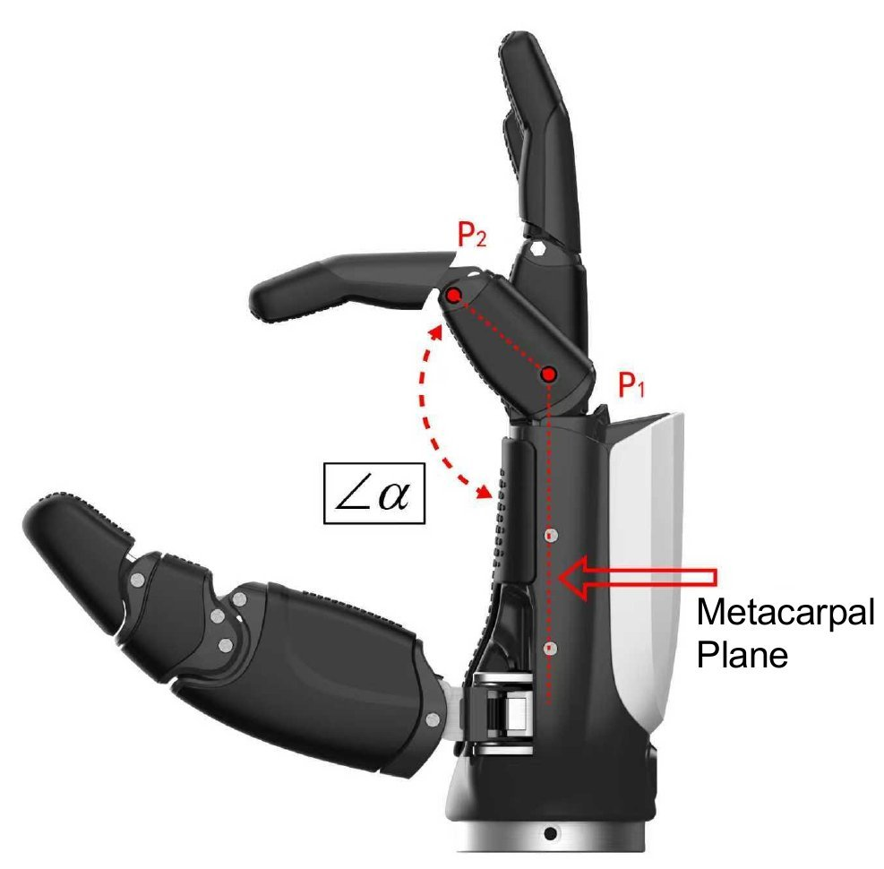
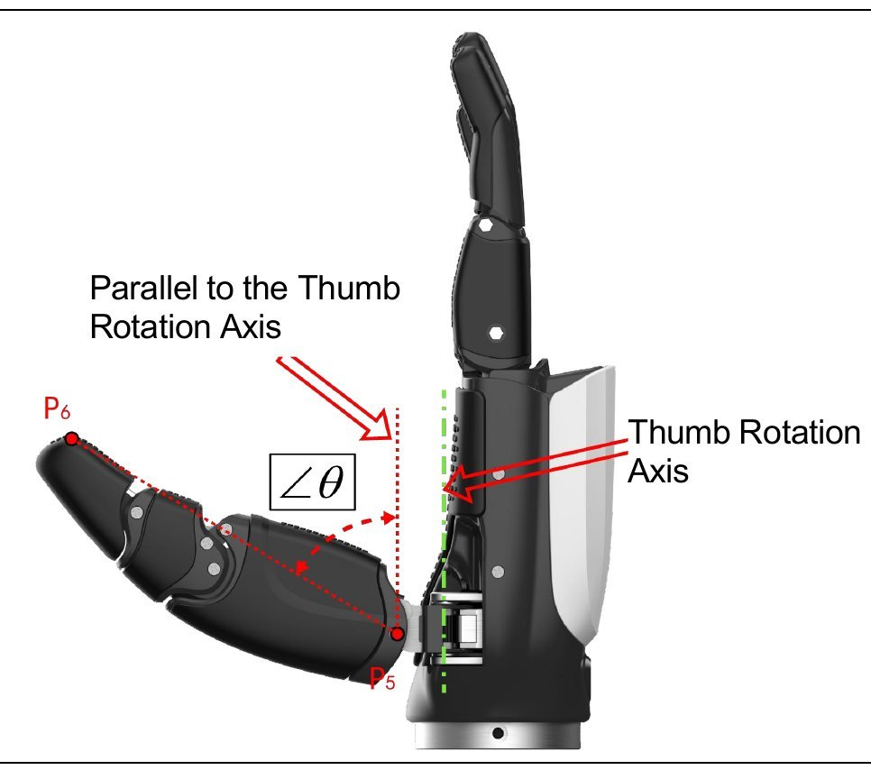
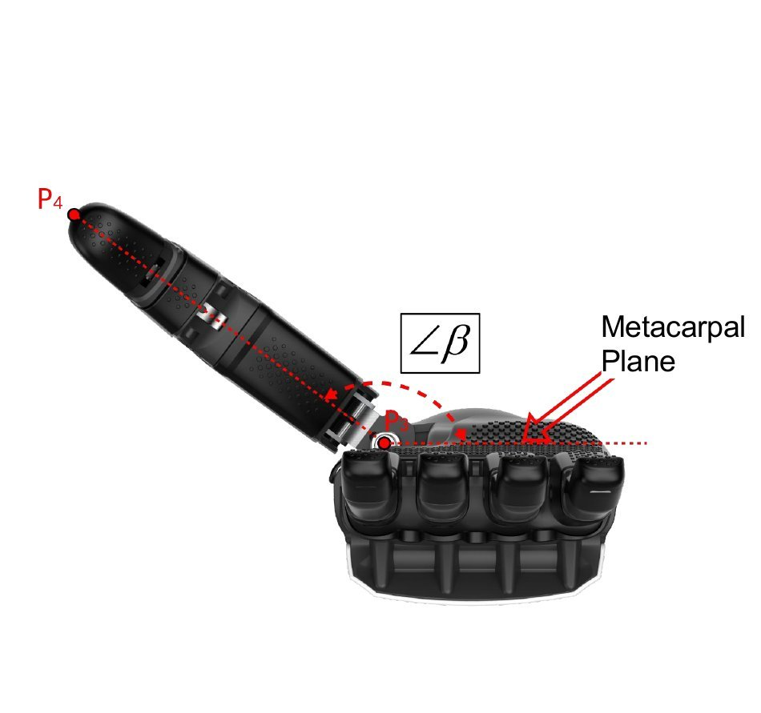
자유도별 힘 제어 임계값 설정값 (1498 ~ 1509)
이 그룹의 레지스터 여섯 개는 손 6자유도의 힘 제어 임계값 설정값입니다. 사용자는 이 그룹으로 손가락의 쥐는 힘을 제어할 수 있습니다.
예를 들어 검지의 힘 제어 값을 300으로 정하고, 검지의 현재 실제 각도가 1000(완전히 편 상태)일 때 검지 각도를 0으로 정하면 검지가 손바닥 쪽으로 굽습니다. 굽는 동안 검지에 걸리는 실제 힘이 300에 이르면 검지는 멈추고, 이르지 않으면 정한 각도까지 움직입니다.
| 주소 | 설명 | 자료형 | 범위 |
|---|---|---|---|
| 1498-1499 | 새끼손가락 힘 제어 설정값 | short | 0 ~ 3000 |
| 1500-1501 | 약지 힘 제어 설정값 | short | 0 ~ 3000 |
| 1502-1503 | 중지 힘 제어 설정값 | short | 0 ~ 3000 |
| 1504-1505 | 검지 힘 제어 설정값 | short | 0 ~ 3000 |
| 1506-1507 | 엄지 굽힘 힘 제어 설정값 | short | 0 ~ 3000 |
| 1508-1509 | 엄지 회전 힘 제어 설정값 | short | 0 ~ 3000 |
이 레지스터 값은 그 손가락 끝이 낼 수 있는 쥐는 힘입니다. 예를 들어 약지의 힘 제어 값을 800으로 정하면 약지 끝이 800 g까지 쥐는 힘을 낼 수 있습니다. 물체에 닿는 부분이 손가락 끝이 아니면 낼 수 있는 쥐는 힘이 달라집니다. 쥐는 힘의 크기는 힘의 팔 길이에 따라 달라, 힘의 팔이 짧을수록 커집니다.
자유도별 속도 설정값 (1522 ~ 1533)
이 그룹의 레지스터 여섯 개는 손 6자유도의 속도 설정값입니다. 이 값은 저장할 수 있어 전원을 꺼도 남습니다.
| 주소 | 설명 | 자료형 | 범위 |
|---|---|---|---|
| 1522-1523 | 새끼손가락 속도 설정값 | short | 0 ~ 1000 |
| 1524-1525 | 약지 속도 설정값 | short | 0 ~ 1000 |
| 1526-1527 | 중지 속도 설정값 | short | 0 ~ 1000 |
| 1528-1529 | 검지 속도 설정값 | short | 0 ~ 1000 |
| 1530-1531 | 엄지 굽힘 속도 설정값 | short | 0 ~ 1000 |
| 1532-1533 | 엄지 회전 속도 설정값 | short | 0 ~ 1000 |
속도 값 1000은 무부하 상태의 손가락이 큰 각도에서 최소 각도까지 600 ms에 움직이는 속도입니다. 부하가 크면 실제 속도는 이보다 조금 느립니다.
손가락 동작 모드 설정 (1625 ~ 1630)
이 그룹의 레지스터 여섯 개는 손가락별 동작 모드를 정합니다.
- 0 · 속도-힘 보호 모드: 손가락이 정한 각도에 이르거나 실제 힘이 정한 힘을 넘으면 멈춥니다.
- 1 · 힘 폐루프 제어 모드: 손가락이 정한 힘 값을 기준으로 힘 폐루프 제어를 합니다. 실제 힘이 설정값의 정해진 범위 안에서 안정될 때까지 제어하고, 그때 움직임을 멈춥니다. 실제 힘이 바뀌면 다시 힘 폐루프 제어로 그 변화를 따라갑니다.
| 주소 | 설명 | 자료형 | 범위 |
|---|---|---|---|
| 1625 | 새끼손가락 동작 모드 | byte | 0 ~ 1 |
| 1626 | 약지 동작 모드 | byte | 0 ~ 1 |
| 1627 | 중지 동작 모드 | byte | 0 ~ 1 |
| 1628 | 검지 동작 모드 | byte | 0 ~ 1 |
| 1629 | 엄지 굽힘 동작 모드 | byte | 0 ~ 1 |
| 1630 | 엄지 회전 동작 모드 | byte | 0 ~ 1 |
모든 줄에서 값 0은 속도-힘 보호 모드(Speed-Force Protection Mode), 1은 힘 제어 모드(Force Control Mode)입니다.
상태 읽기 문서
자유도별 액추에이터 실제 위치 (1534 ~ 1545)
이 그룹의 레지스터 여섯 개는 손 6자유도 액추에이터의 현재 실제 위치이며, 읽기 전용입니다.
| 주소 | 설명 | 자료형 | 범위 |
|---|---|---|---|
| 1534-1535 | 새끼손가락 실제 위치 | short | 0 ~ 2000 |
| 1536-1537 | 약지 실제 위치 | short | 0 ~ 2000 |
| 1538-1539 | 중지 실제 위치 | short | 0 ~ 2000 |
| 1540-1541 | 검지 실제 위치 | short | 0 ~ 2000 |
| 1542-1543 | 엄지 굽힘 실제 위치 | short | 0 ~ 2000 |
| 1544-1545 | 엄지 회전 실제 위치 | short | 0 ~ 2000 |
0은 액추에이터 최소 스트로크로 손가락 최대 각도, 2000은 최대 스트로크로 손가락 최소 각도에 해당합니다.
자유도별 실제 각도 (1546 ~ 1557)
이 그룹의 레지스터 여섯 개는 손 6자유도의 실제 각도이며, 읽기 전용입니다. 각 자유도 각도의 정의는 위 '자유도별 각도 설정값'을 보십시오.
| 주소 | 설명 | 자료형 | 범위 |
|---|---|---|---|
| 1546-1547 | 새끼손가락 실제 각도 | short | 0 ~ 1000 |
| 1548-1549 | 약지 실제 각도 | short | 0 ~ 1000 |
| 1550-1551 | 중지 실제 각도 | short | 0 ~ 1000 |
| 1552-1553 | 검지 실제 각도 | short | 0 ~ 1000 |
| 1556-1557 | 엄지 회전 실제 각도 | short | 0 ~ 1000 |
원문 표에는 1554-1555(엄지 굽힘 실제 각도) 줄이 없습니다. 그룹 길이(6 short, 1546 ~ 1557)로 보면 그 자리에 엄지 굽힘이 옵니다.
손가락별 실제 힘 (1582 ~ 1593)
이 그룹의 레지스터 여섯 개는 손의 여섯 자유도에 걸리는 실제 힘입니다. 단위는 g이며, 읽기 전용입니다.
| 주소 | 설명 | 자료형 | 범위 |
|---|---|---|---|
| 1582-1583 | 새끼손가락 실제 힘 | short | −4000 ~ 4000 |
| 1584-1585 | 약지 실제 힘 | short | −4000 ~ 4000 |
| 1586-1587 | 중지 실제 힘 | short | −4000 ~ 4000 |
| 1588-1589 | 검지 실제 힘 | short | −4000 ~ 4000 |
| 1590-1591 | 엄지 굽힘 실제 힘 | short | −4000 ~ 4000 |
| 1592-1593 | 엄지 회전 실제 힘 | short | −4000 ~ 4000 |
자유도별 액추에이터 전류 (1594 ~ 1605)
이 그룹의 레지스터 여섯 개는 손 액추에이터 여섯 개의 전류 값이며, 읽기 전용입니다.
| 주소 | 설명 | 자료형 | 범위 | 단위 |
|---|---|---|---|---|
| 1594-1595 | 새끼손가락 액추에이터 전류 | short | 0 ~ 2000 | mA |
| 1596-1597 | 약지 액추에이터 전류 | short | 0 ~ 2000 | mA |
| 1598-1599 | 중지 액추에이터 전류 | short | 0 ~ 2000 | mA |
| 1600-1601 | 검지 액추에이터 전류 | short | 0 ~ 2000 | mA |
| 1602-1603 | 엄지 굽힘 액추에이터 전류 | short | 0 ~ 2000 | mA |
| 1604-1605 | 엄지 회전 액추에이터 전류 | short | 0 ~ 2000 | mA |
액추에이터 오류 코드 (1606 ~ 1611)
이 그룹의 레지스터 여섯 개는 손 액추에이터 여섯 개의 오류 코드이며, 읽기 전용입니다.
| 주소 | 설명 | 자료형 |
|---|---|---|
| 1606 | 새끼손가락 액추에이터 | byte |
| 1607 | 약지 액추에이터 | byte |
| 1608 | 중지 액추에이터 | byte |
| 1609 | 검지 액추에이터 | byte |
| 1610 | 엄지 굽힘 액추에이터 | byte |
| 1611 | 엄지 회전 액추에이터 | byte |
| 비트 | 설명 |
|---|---|
| Bit0 | 구속(locked-rotor) 오류 |
| Bit1 | 과열 오류 |
| Bit2 | 과전류 오류 |
| Bit3 | 모터 동작 이상 |
| Bit4 | 통신 오류 |
예를 들어 오류 코드가 0x06(2진수 00000110)이면 검지 액추에이터에 과열 오류와 과전류 오류가 났다는 뜻입니다.
액추에이터 온도 (1618 ~ 1623)
이 그룹은 손 액추에이터 여섯 개의 온도 값이며, 읽기 전용입니다.
| 주소 | 설명 | 자료형 | 범위 | 단위 |
|---|---|---|---|---|
| 1618 | 새끼손가락 액추에이터 온도 | byte | 0 ~ 100 | °C |
| 1619 | 약지 액추에이터 온도 | byte | 0 ~ 100 | °C |
| 1620 | 중지 액추에이터 온도 | byte | 0 ~ 100 | °C |
| 1621 | 검지 액추에이터 온도 | byte | 0 ~ 100 | °C |
| 1622 | 엄지 굽힘 액추에이터 온도 | byte | 0 ~ 100 | °C |
| 1623 | 엄지 회전 액추에이터 온도 | byte | 0 ~ 100 | °C |
촉각 센서 데이터
손 모델에 따라 촉각 센서의 종류가 다릅니다. RH56DFTP-0L/0R · RH56DFTP-2L/2R은 압저항식, RH56DFTP-0L/0R-C1 · RH56DFTP-2L/2R-C1은 정전식 촉각 센서를 씁니다. 쓰기 전에 모델을 확인하십시오. 문서
압저항식 촉각 센서 문서
RH56DFTP-0L/0R · RH56DFTP-2L/2R 손의 촉각 배치는 아래와 같습니다. 연한 노란색 부분이 촉각 센서 위치입니다. 그림의 Tip section은 끝단, Fingertip은 손끝, Middle section은 중간부, Finger pad는 손가락 안쪽, Palm은 손바닥입니다.
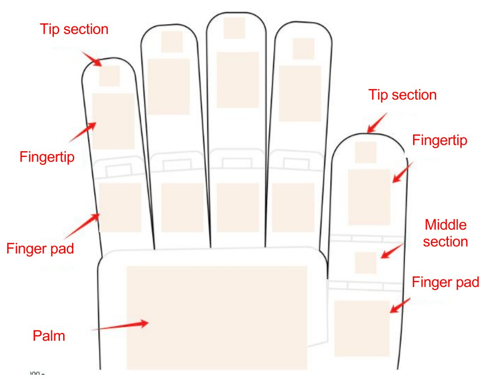
| 주소 | 뜻 | 행 × 열 | 길이 | 권한 |
|---|---|---|---|---|
| 3000-3017 | 새끼손가락 끝단(tip) 촉각 | 3×3 | 18 byte | R |
| 3018-3209 | 새끼손가락 손끝(nail) 촉각 | 12×8 | 192 byte | R |
| 3210-3369 | 새끼손가락 안쪽(pad) 촉각 | 10×8 | 160 byte | R |
| 3370-3387 | 약지 끝단(tip) 촉각 | 3×3 | 18 byte | R |
| 3388-3579 | 약지 손끝(nail) 촉각 | 12×8 | 192 byte | R |
| 3580-3739 | 약지 안쪽(pad) 촉각 | 10×8 | 160 byte | R |
| 3740-3757 | 중지 끝단(tip) 촉각 | 3×3 | 18 byte | R |
| 3758-3949 | 중지 손끝(nail) 촉각 | 12×8 | 192 byte | R |
| 3950-4109 | 중지 안쪽(pad) 촉각 | 10×8 | 160 byte | R |
| 4110-4127 | 검지 끝단(tip) 촉각 | 3×3 | 18 byte | R |
| 4128-4319 | 검지 손끝(nail) 촉각 | 12×8 | 192 byte | R |
| 4320-4479 | 검지 안쪽(pad) 촉각 | 10×8 | 160 byte | R |
| 4480-4497 | 엄지 끝단(tip) 촉각 | 3×3 | 18 byte | R |
| 4498-4689 | 엄지 손끝(nail) 촉각 | 12×8 | 192 byte | R |
| 4690-4707 | 엄지 중간부(middle section) 촉각 | 3×3 | 18 byte | R |
| 4708-4899 | 엄지 끝(원문 'thumb tip') 촉각 | 12×8 | 192 byte | R |
| 4900-5123 | 손바닥 촉각 | 8×14 | 224 byte | R |
위 표의 촉각 점 하나는 16비트 정수(2바이트, 리틀 엔디언: 하위 바이트가 먼저, 상위 바이트가 뒤)이며, 값 범위는 0 ~ 4095입니다.
- 손가락: 데이터 점 1은 1행 1열, 점 2는 1행 2열, 점 3은 1행 3열, 점 4는 1행 4열, 점 5는 1행 5열, 점 6은 1행 6열, 점 7은 1행 7열, 점 8은 1행 8열, 점 9는 2행 1열, 점 10은 2행 2열 … 순서입니다.
- 손바닥: 데이터 점 1은 8행 1열, 점 2는 7행 1열, 점 3은 6행 1열, 점 4는 5행 1열, 점 5는 4행 1열, 점 6은 3행 1열, 점 7은 2행 1열, 점 8은 1행 1열, 점 9는 8행 2열, 점 10은 7행 2열 … 순서입니다.
원문은 4480 ~ 4497과 4708 ~ 4899를 모두 'thumb tip'으로 적었습니다. 그림의 엄지에는 Finger pad(손가락 안쪽)가 있고, Unitree IDL(9장)의 엄지 fingerfive_palm_touch가 96점(= 12×8)이므로 4708 ~ 4899는 엄지 안쪽으로 보입니다.
손가락 점 순서 설명은 8열 기준이며, 3×3 끝단 그룹의 순서는 원문에 따로 없습니다.
정전식 촉각 센서 문서
RH56DFTP-0L/0R-C1 · RH56DFTP-2L/2R-C1 손의 촉각 배치는 아래와 같습니다. 연한 노란색 부분이 촉각 센서 위치입니다.
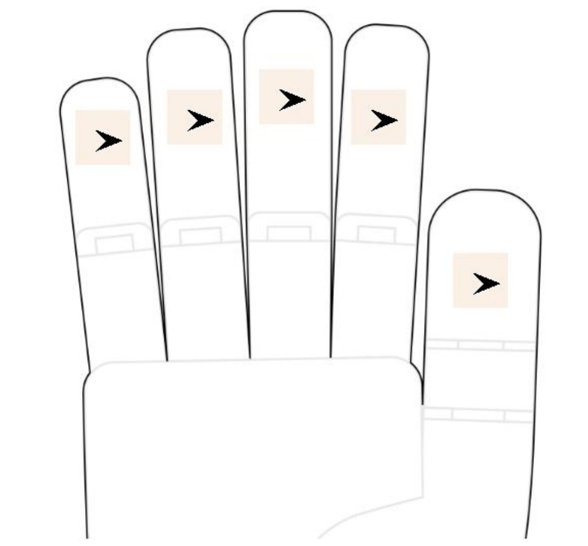
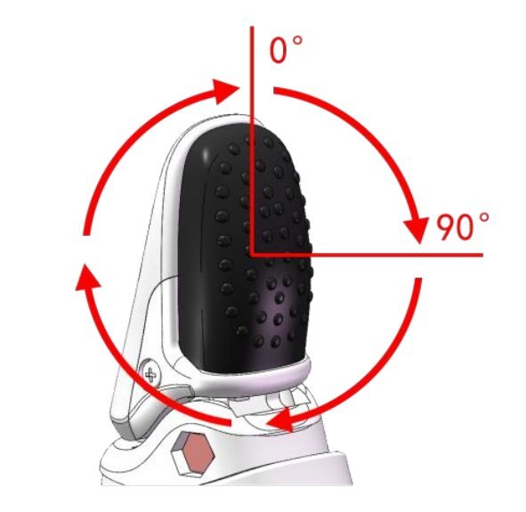
손가락에는 정전식 촉각 센서가 있습니다. 이 센서는 손끝의 법선력 · 접선력 · 접선력 방향을 알려 줍니다. 접선력 방향은 0° ~ 359°이며, 손끝이 향한 방향에서 시계 방향으로 커집니다 (그림 10). 읽은 접선력 데이터가 0xFFFF이면 각도가 유효하지 않습니다. 촉각 센서의 원시 데이터 형식과 손 안의 촉각 데이터 주소는 다음 두 표와 같습니다.
| 항목 | 바이트 | 데이터 |
|---|---|---|
| 원시 값Raw Value | 채널 수 × 4 | 32비트 리틀 엔디언 |
| 법선력Normal Force | 4 | Float 리틀 엔디언 |
| 법선력 변화량Normal Force Delta | 4 | 32비트 리틀 엔디언 |
| 접선력Tangential Force | 4 | Float 리틀 엔디언 |
| 접선력 변화량Tangential Force Delta | 4 | 32비트 리틀 엔디언 |
| 접선력 방향Tangential Force Direction | 2 | 16비트 리틀 엔디언 |
| 근접 감지 변화량Proximity Sense Delta | 4 | 32비트 리틀 엔디언 |
| 체크Check | 2 | chk_l, chk_h |
| 예약Reserved | 2 |
법선력부터 근접 감지 변화량까지 여섯 항목은 원문에서 '3D 힘 데이터(3D Force Data)'로 묶여 있습니다.
| 주소 | 뜻 | 길이 | 권한 |
|---|---|---|---|
| 3000-3057 | 새끼손가락 촉각 데이터 | 58 byte | R |
| 3058-3115 | 약지 촉각 데이터 | 58 byte | R |
| 3116-3173 | 중지 촉각 데이터 | 58 byte | R |
| 3174-3231 | 검지 촉각 데이터 | 58 byte | R |
| 3232-3290 | 엄지 촉각 데이터 | 58 byte | R |
엄지 주소 3232 ~ 3290은 59개 주소인데 길이는 58 byte입니다 (다른 손가락은 58개 주소). 접선력 데이터가 0xFFFF라는 설명의 '데이터'는 2바이트인 접선력 방향 칸에만 맞습니다.
PC 소프트웨어
Inspire가 RH56DFTP(4세대 다섯 손가락 다관절 손)용으로 내놓은 Windows 상위 PC 소프트웨어로 손을 연결하고, 손가락을 움직이고, 파라미터와 동작 시퀀스를 설정합니다. 문서
이 장은 Inspire의 SOP for the host computer of the fourth generation five-finger humanoid dexterous hand를 옮겼고, 동작 시퀀스의 세부와 파일 메뉴는 The Dexterous Hand PC Instructions에서 보탰습니다. SOP의 화면은 중국어판(창 제목 FTP灵巧手上位机, 'FTP 다관절 손 상위 PC 소프트웨어')이며, 이 장은 화면 글자에 한국어 뜻을 붙여 적습니다.
USB-RS485 드라이버 설치 문서
USB-RS485 변환기의 드라이버를 설치합니다. 변환기는 보통 파란색 USB 모듈과 검은색 USB 모듈 두 가지이며, 드라이버가 서로 다릅니다.
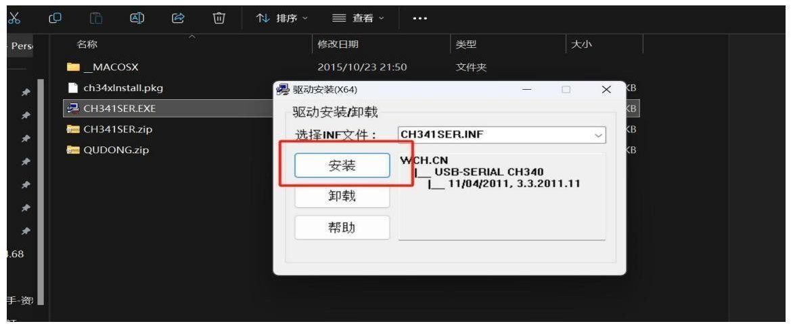
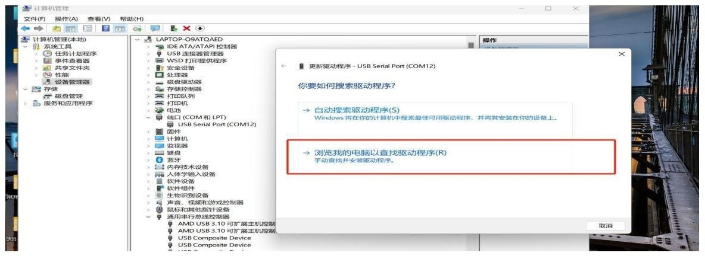
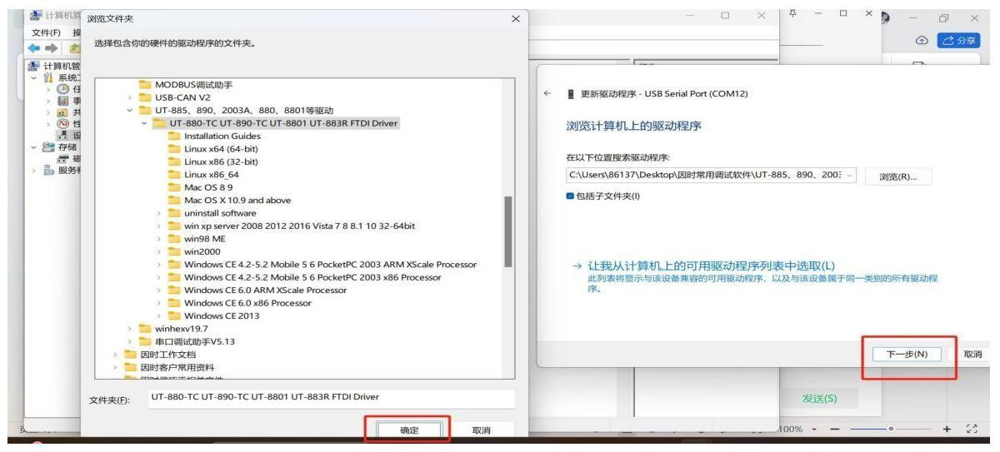
설치를 마치면 하드웨어를 연결하고, 장치 관리자에서 PC에 연결된 손의 직렬 포트 번호를 찾습니다.
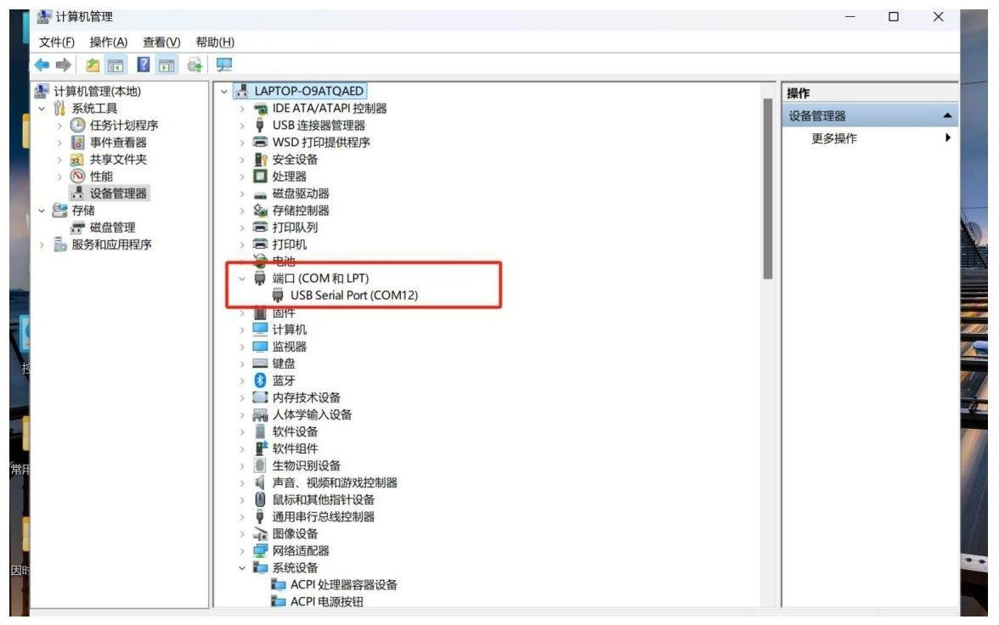
RS485로 연결 문서
손 하드웨어를 그림처럼 연결합니다. 전원 표시등과 손의 통신 표시등은 녹색으로 계속 켜져 있어야 하며, 통신 표시등이 빨간색이면 통신 고장입니다. 검은색 USB 모듈은 상위 PC 소프트웨어에 연결되기 전에는 빨간색 표시등이 켜지고, 연결된 뒤에는 녹색 표시등 두 개가 깜박입니다.
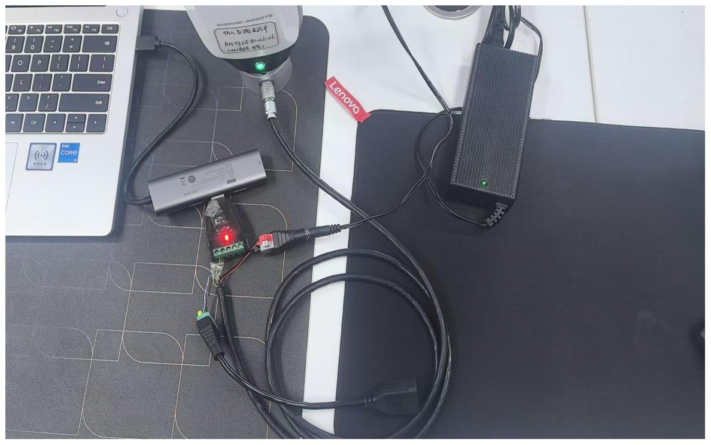
- 4세대 다섯 손가락 다관절 손 상위 PC 소프트웨어를 엽니다.
- 搜索连接(연결 검색)을 누릅니다.창에서 RS232/485와 灵巧手(다관절 손)을 고르고 搜索(검색)을 누릅니다. 직렬 포트 번호 · 보율 · ID가 자동으로 선택됩니다.
- 연결을 확인합니다.연결되면 오른쪽 아래에 UART 连接成功(UART 연결 성공)이 표시됩니다.
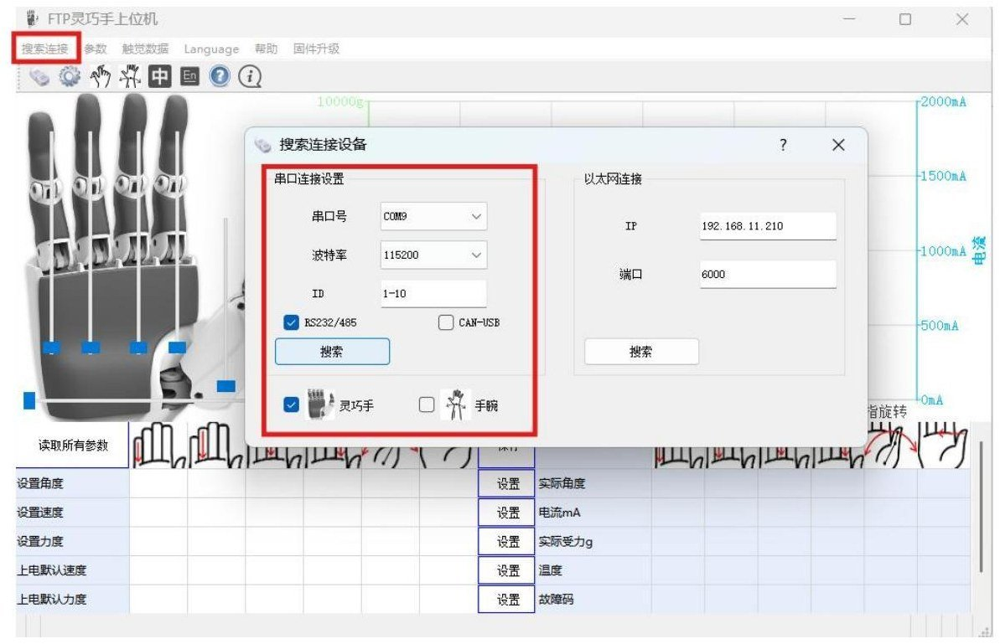
정전식 촉각 모델용 상위 PC 소프트웨어는 지금은 RS485로 연결할 수 없습니다. 네트워크 TCP로 연결하십시오.
손가락 수동 제어 문서
연결되면 왼쪽 손 그림에 슬라이더 여섯 개가 생깁니다. 슬라이더를 끌어 손가락을 하나씩 움직일 수 있지만, 힘과 속도는 제어할 수 없습니다.
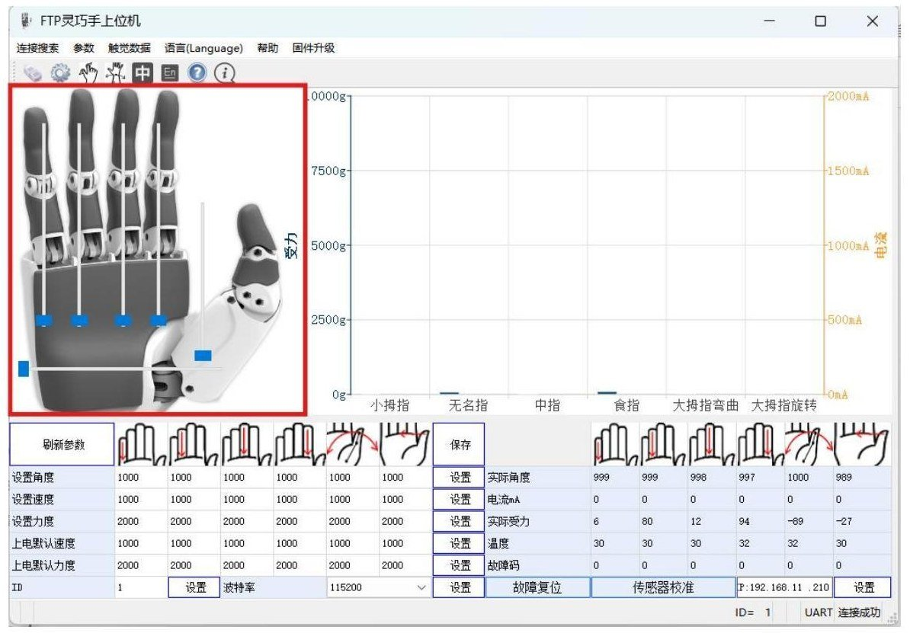
오른쪽 그래프는 움직이는 동안의 손가락별 힘(受力)과 실제 전류(电流)를 보여 주며, 값은 움직임에 따라 바뀝니다.
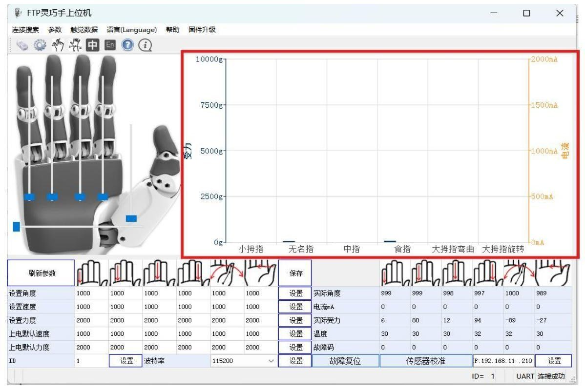
움직이는 동안 전류가 2 A를 넘으면 손이 보호 동작에 들어가 손가락이 움직이지 않습니다. 손가락 하나의 힘은 정전식 모델 2000 g, 압저항식 모델 3000 g까지입니다. 이 범위를 넘겨 쥐면 액추에이터가 미끄러지고 수명이 줄어듭니다.
파라미터 설정 문서
왼쪽 아래는 손의 각도 · 속도 · 힘 설정 영역입니다. 刷新参数(파라미터 새로 고침)을 누르면 파라미터를 보고 고칠 수 있고, 줄 끝의 设置(설정)을 누르면 그 값이 손에 적용됩니다.
| 줄 | 범위 | −1의 뜻 |
|---|---|---|
| 设置角度 각도 | −1, 0 ~ 1000 | 액추에이터가 움직이지 않음 |
| 设置速度 속도 | −1, 0 ~ 1000 | 액추에이터에 속도 설정 없음 |
| 设置力度 힘 | −1, 0 ~ 3000 | 원문은 '속도 설정 없음' (힘 줄에 속도로 적힘) |
| 上电默认速度 전원 투입 기본 속도 | −1, 0 ~ 1000 | 액추에이터 동작 없음 |
| 上电默认力度 전원 투입 기본 힘 | −1, 0 ~ 3000 | 액추에이터 동작 없음 |
기본 속도 · 기본 힘 · ID · 보율을 바꾸려면 设置(설정)을 누른 다음 保存(저장)을 누르고, 전원을 껐다 켜십시오.
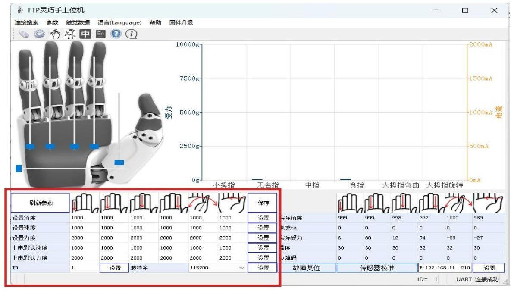
사용 설명서(6장 보율 설정)는 보율 레지스터 1002를 '저장 안 됨'으로 적었지만, 이 SOP는 보율도 설정 → 저장 → 전원 재투입으로 바꾼다고 적습니다.
실제 값 · 고장 리셋 · 센서 보정 문서
오른쪽 아래에는 액추에이터의 실제 각도 · 전류 · 힘 · 온도와 고장 정보(故障码)가 표시됩니다. 고장이 있으면 故障复位(고장 리셋)을 누르고, 고장이 해제되었는지 확인하십시오. 传感器校准(센서 보정: 각도 · 힘 보정)도 이 영역에서 하며, 맨 끝 칸에서는 손의 IP를 보고 바꿀 수 있습니다.
손가락에 걸리는 힘 값이 정확하지 않으면 힘 센서를 보정하십시오 (PC Instructions). 보정할 때는 6장 '힘 센서 보정'의 주의 사항을 지키십시오.
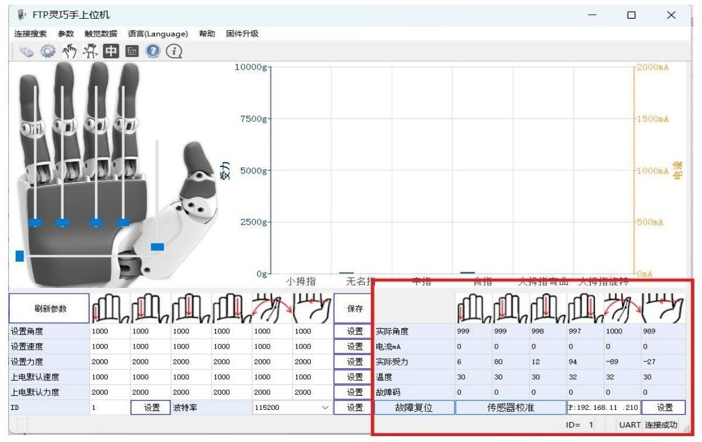
내부 파라미터 문서
왼쪽 위 参数(파라미터) → 内部参数(내부 파라미터)에서 펌웨어 번호(固件号) · 액추에이터 SN · 소프트웨어 버전을 볼 수 있습니다.
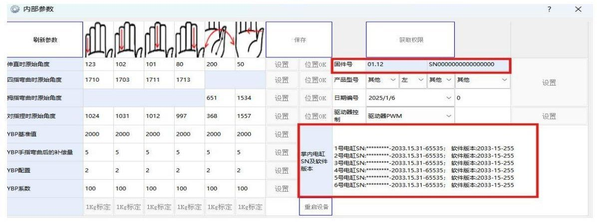
동작 시퀀스 문서
왼쪽 위 参数(파라미터) → 动作序列参数(동작 시퀀스 파라미터)를 누르면 동작 시퀀스 창이 열립니다. 이 창에서 동작을 편집하고, 편집한 동작을 손에서 실행할 수 있습니다. 1 ~ 13번은 공장 기본 동작 시퀀스, 14 ~ 40번은 사용자 편집용입니다.
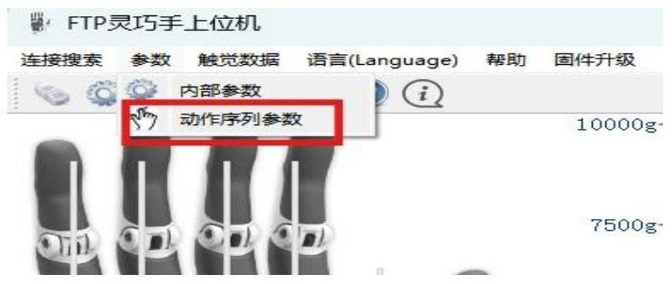
공장 기본 동작 시퀀스는 上传(업로드) → 위쪽 Action1 탭 → 测试(테스트) 순서로 실행합니다. 동작을 직접 만들려면 아래 예처럼 편집합니다.
편집 예: Action17
- Action17 탭을 고르고 단계 수를 共2步(총 2단계)로 정합니다.
- Step 1을 채웁니다.검지 · 중지 · 약지 · 새끼손가락 각도는 500, 엄지 회전 각도는 1000으로 정하고, 엄지 굽힘 각도는 비워 둡니다. 모든 손가락의 힘과 속도는 500, 지연(延时)은 1000 ms로 정합니다.
- Step 2를 채웁니다.각도는 0(주먹 상태), 모든 손가락의 힘과 속도는 500, 지연은 1000 ms로 정합니다.
- 下载(다운로드)를 누릅니다.다운로드에 성공하면 오른쪽 아래에 第17号动作序列写入数据成功!(17번 동작 시퀀스 데이터 쓰기 성공)이 표시됩니다.
이 시퀀스를 실행하면 손은 1단계에서 네 손가락을 반쯤 펴고 1초 기다린 뒤, 2단계에서 다섯 손가락으로 주먹을 쥡니다.
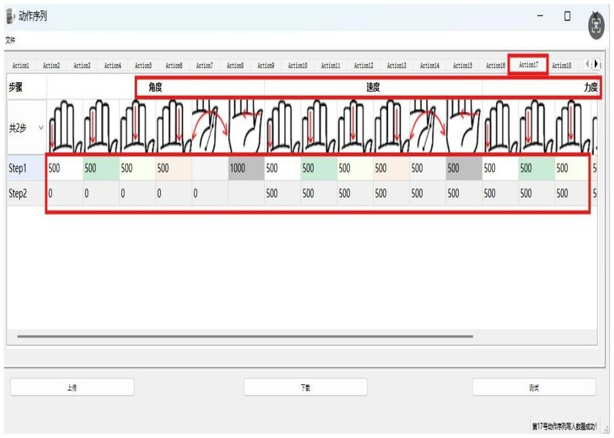
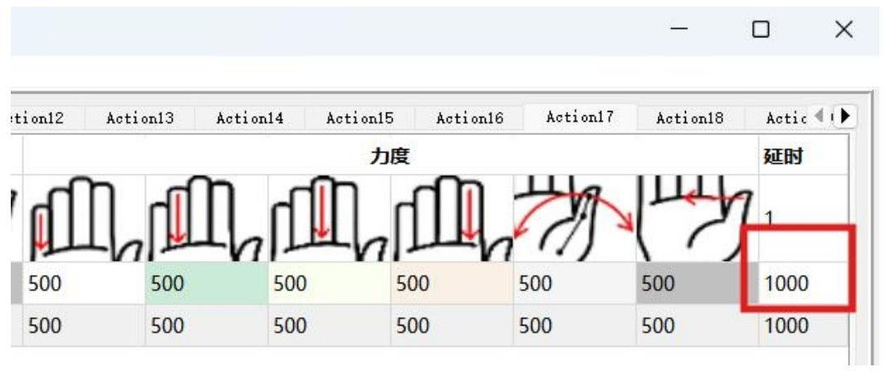
동작 시퀀스 세부와 파일 (PC Instructions)
Inspire의 The Dexterous Hand PC Instructions(V0.0.1, 영문 화면)는 동작 시퀀스 항목을 다음과 같이 설명합니다.
- 동작 시퀀스마다 최대 8단계이며, 단계별로 손가락 각도 · 동작 속도 · 힘 · 대기 시간을 따로 정합니다.
- 단계 수: 0 ~ 8로 정할 수 있습니다.
- 손가락 각도: 그 단계의 목표 손가락 각도입니다. 입력 범위는 0 ~ 1000이며, 0은 손가락을 가장 많이 굽힌 상태, 1000은 완전히 편 상태입니다. 빈칸으로 두면 그 손가락은 움직이지 않습니다.
- 동작 속도: 그 단계의 손가락 동작 속도이며, 범위는 1 ~ 1000입니다.
- 힘: 그 단계의 손가락 힘이며, 범위는 1 ~ 1000입니다.
- 지연 시간: 그 단계의 대기 시간입니다. 원문에는 '손가락 동작 속도를 정합니다'로 잘못 적혀 있습니다.
- 데이터를 다 정했으면 표 오른쪽의 Download를 눌러 손에 내려받습니다. Test를 누르면 손이 그 동작 시퀀스대로 움직이고, Upload를 누르면 손에 저장된 동작 시퀀스를 읽어 표에 보여 줍니다.
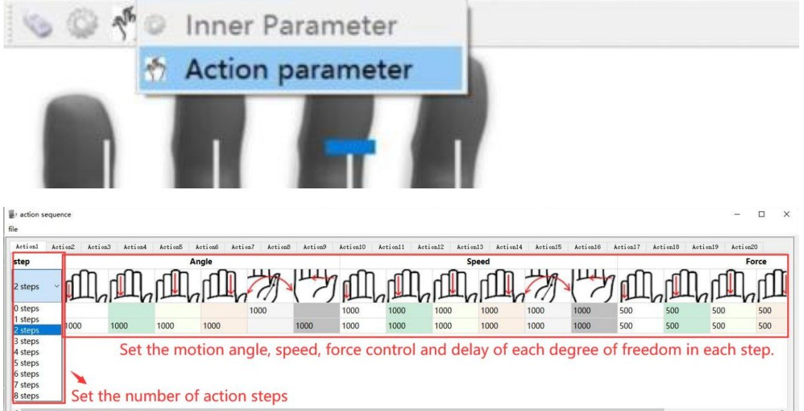
동작 시퀀스 창의 file 메뉴에는 다음 항목이 있습니다.
- open offline file: 동작 시퀀스 데이터 파일을 열어 소프트웨어의 데이터 영역에 보여 줍니다.
- download file data to the device: 동작 시퀀스 데이터 파일의 데이터를 손에 한꺼번에 내려받습니다.
- save as offline file: 소프트웨어에 표시되고 편집된 동작 시퀀스 데이터 전체를 지정한 파일에 저장합니다.
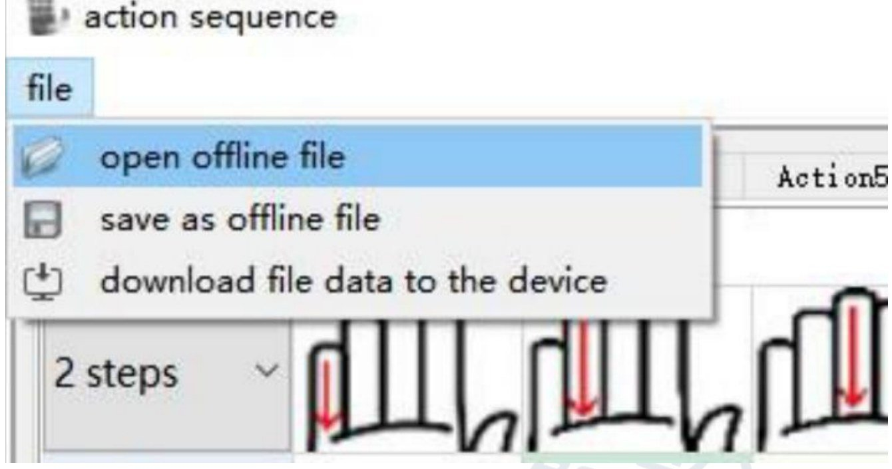
PC Instructions는 '1 ~ 13번 동작 시퀀스를 설정할 수 있다'고 하고 힘을 1 ~ 1000으로 적습니다. SOP와 사용 설명서(6장 목표 제스처 번호)는 1 ~ 13번을 공장 고정, 14 ~ 40번을 사용자용으로 적고, 레지스터의 힘 범위는 0 ~ 3000입니다.
TCP로 연결 문서
손 하드웨어를 그림처럼 연결합니다. 전원 표시등과 손의 통신 표시등은 녹색으로 계속 켜져 있어야 하며, 통신 표시등이 빨간색이면 통신 고장입니다.
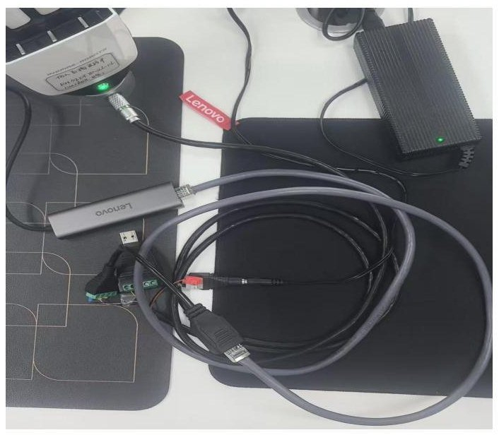
- PC의 로컬 주소를 바꿉니다.손 IP가 192.168.11.210이면 PC 주소는 192.168.11.222처럼 마지막 자리만 다르게 정합니다.
- 连接搜索(연결 검색) → 以太网连接(이더넷 연결)을 엽니다.손의 기본 IP 192.168.11.210, 포트 6000을 확인하고 搜索(검색)을 누릅니다.
- 연결을 확인합니다.실제 값 읽기 영역에 값이 나타나면 연결된 것입니다.
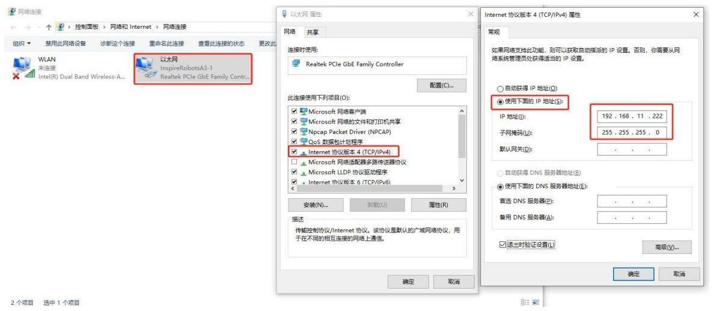
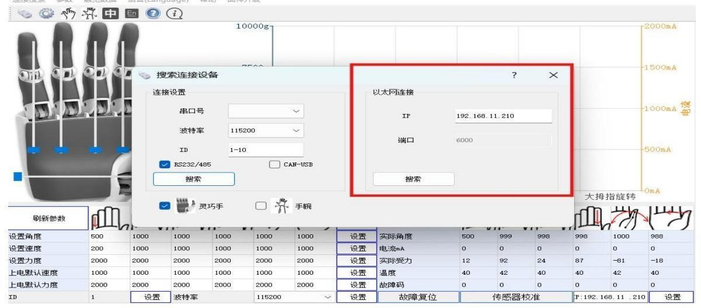
촉각 데이터 문서
TCP로 연결하면 RS485 연결과 달리 촉각 데이터 패널을 쓸 수 있습니다. 왼쪽 위 触觉数据(촉각 데이터)를 열고 设置基准值(기준값 설정)을 누른 뒤, 손의 촉각 센서를 만지면 값이 표시됩니다.
아래 그림은 정전식 모델의 화면입니다. 촉각 센서는 각 손가락 끝에 있으며, 만지면 촉각 값이 바뀝니다. 손가락 끝마다 촉각 영역이 네 개(CH1 ~ CH4) 있어 이 네 영역으로 촉각을 분석하고, 네 영역의 힘으로 힘이 나가는 방향을 보여 줍니다. 最大值(최댓값)은 네 영역에서 잰 값 가운데 가장 큰 값, 平均值(평균값)은 네 영역에서 잰 값의 평균입니다.
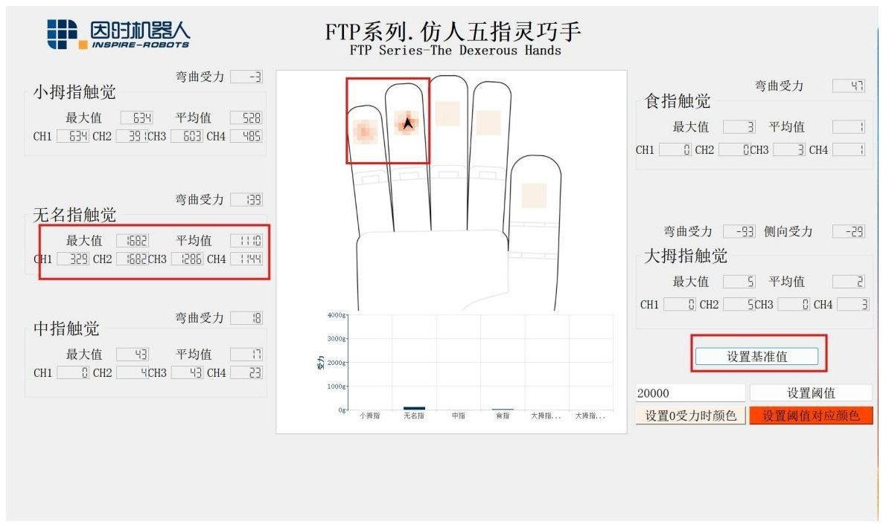
압저항식 모델은 손가락 끝과 손바닥에 촉각 센서가 17개 있습니다. 압저항식 촉각 센서는 힘의 방향을 알 수 없습니다.
Unitree G1 연동
Unitree G1에는 Inspire의 다섯 손가락 다관절 손(Unitree 문서의 'Inspire FTP')을 달 수 있습니다. 이 장은 Unitree 문서 「Inspire FTP Dexterity Hand」를 옮긴 것입니다. 문서
이 손은 6자유도 · 운동 관절 12개로 사람 손의 복잡한 동작을 흉내 냅니다. 촉각형에는 촉각 센서 17개가 들어 있습니다. G1에 다는 다른 손은 Unitree G1 개발 설명서를 보십시오.
제어 방식 문서
손의 통신 방식은 RS485 위의 Modbus RTU와 Modbus TCP 두 가지입니다. 촉각 센서가 없는 모델은 RS485만 지원합니다. 이 SDK는 두 방식 모두로 손과 통신하며, 데이터와 제어 명령을 DDS 형식으로 전달합니다.
G1은 USB-직렬 모듈을 제공합니다. 이 모듈을 PC2(개발 연산 유닛)에 꽂으면 RS485로 제어할 수 있습니다. 이때 포트는 보통 /dev/ttyUSB0이며, 이름 끝에 485가 붙은 프로그램을 실행합니다.
- Inspire 공식 SDK로 제어Inspire 공식 통신 프로토콜(이 책 4 ~ 7장)에 따라 직접 프로그램을 짭니다.
- Unitree 다관절 손 SDK로 제어G1 통신은 DDS 기반입니다.
unitree_sdk2로 손을 제어하기 쉽도록, 손 데이터를 DDS 메시지로 바꾸는 예제 프로그램을 Unitree가 제공합니다.
SDK 인터페이스 문서
| 토픽 | 메시지 형식 | 방향 · 내용 |
|---|---|---|
rt/inspire_hand/ctrl/* | inspire::inspire_hand_ctrl | 사용자 → 손 · 제어 |
rt/inspire_hand/state/* | inspire::inspire_hand_state | 손 → 사용자 · 상태 |
rt/inspire_hand/touch/* | inspire::inspire_hand_touch | 손 → 사용자 · 촉각 센서 데이터 |
*는 토픽 접미사이며 기본값은 r(오른손)입니다. 485 통신을 쓰면 rt/inspire_hand/touch/* 토픽은 메시지를 발행하지 않습니다.
IDL 데이터 형식 문서
모터 데이터는 배열로 되어 있으며, 두 손 모터 12개의 데이터를 담습니다. MotorCmd_.idl · MotorState_.idl 형식은 Unitree 문서 'Basic Services Interface'에 있습니다.
손 데이터 형식은 Inspire 공식 설명 문서와 거의 같으며, 자세한 내용은 inspire_hand_sdk/hand_idl의 .idl 파일을 보십시오.
// inspire_hand_ctrl.idl
module inspire
{
struct inspire_hand_ctrl
{
sequence<int16,6> pos_set;
sequence<int16,6> angle_set;
sequence<int16,6> force_set;
sequence<int16,6> speed_set;
int8 mode;
};
};
// inspire_hand_state.idl
module inspire
{
struct inspire_hand_state
{
sequence<int16,6> pos_act;
sequence<int16,6> angle_act;
sequence<int16,6> force_act;
sequence<int16,6> current;
sequence<uint8,6> err;
sequence<uint8,6> status;
sequence<uint8,6> temperature;
};
};
// inspire_hand_touch.idl
module inspire
{
struct inspire_hand_touch
{
sequence<int16,9> fingerone_tip_touch; // Pinky fingertip touch data
sequence<int16,96> fingerone_top_touch; // Pinky fingertip touch data
sequence<int16,80> fingerone_palm_touch; // Pinky palm touch data
sequence<int16,9> fingertwo_tip_touch; // Ring fingertip touch data
sequence<int16,96> fingertwo_top_touch; // Ring fingertip touch data
sequence<int16,80> fingertwo_palm_touch; // Ring palm touch data
sequence<int16,9> fingerthree_tip_touch; // Middle fingertip touch data
sequence<int16,96> fingerthree_top_touch; // Middle fingertip touch data
sequence<int16,80> fingerthree_palm_touch; // Middle palm touch data
sequence<int16,9> fingerfour_tip_touch; // Index fingertip touch data
sequence<int16,96> fingerfour_top_touch; // Index fingertip touch data
sequence<int16,80> fingerfour_palm_touch; // Index palm touch data
sequence<int16,9> fingerfive_tip_touch; // Thumb fingertip touch data
sequence<int16,96> fingerfive_top_touch; // Thumb fingertip touch data
sequence<int16,9> fingerfive_middle_touch; // Thumb middle touch data
sequence<int16,96> fingerfive_palm_touch; // Thumb palm touch data
sequence<int16,112> palm_touch; // Palm touch data
};
};
촉각 배열의 길이는 7장 압저항식 표의 점 수와 같습니다: tip 9점 = 3×3, top 96점 = 12×8, 네 손가락의 palm 80점 = 10×8, 엄지 middle 9점 = 3×3, 엄지 palm 96점 = 12×8, palm_touch 112점 = 8×14.
제어 mode
제어 메시지에는 mode 옵션이 추가되어 있어, 실행할 명령을 2진 비트의 조합으로 지정합니다.
| mode | 2진 | 명령 |
|---|---|---|
| 0 | 0000 | 동작 없음 |
| 1 | 0001 | 각도 |
| 2 | 0010 | 위치 |
| 3 | 0011 | 각도 + 위치 |
| 4 | 0100 | 힘 제어 |
| 5 | 0101 | 각도 + 힘 제어 |
| 6 | 0110 | 위치 + 힘 제어 |
| 7 | 0111 | 각도 + 위치 + 힘 제어 |
| mode | 2진 | 명령 |
|---|---|---|
| 8 | 1000 | 속도 |
| 9 | 1001 | 각도 + 속도 |
| 10 | 1010 | 위치 + 속도 |
| 11 | 1011 | 각도 + 위치 + 속도 |
| 12 | 1100 | 힘 제어 + 속도 |
| 13 | 1101 | 각도 + 힘 제어 + 속도 |
| 14 | 1110 | 위치 + 힘 제어 + 속도 |
| 15 | 1111 | 각도 + 위치 + 힘 제어 + 속도 |
IDL의 관절 순서
| Id | 0 | 1 | 2 | 3 | 4 | 5 |
|---|---|---|---|---|---|---|
| 관절 | 새끼 (Pinky) | 약지 (Ring) | 중지 (Middle) | 검지 (Index) | 엄지 굽힘 (Thumb-bend) | 엄지 회전 (Thumb-rotation) |
SDK 설치 문서
이 SDK는 주로 Python으로 구현되었고 unitree_sdk2_python에 의존하며, 시각화에 PyQt5 · PyQtGraph를 씁니다.
unitree_sdk2_python은 BSD-3-Clause, PyQtGraph는 MIT, PyQt5는 GPL v3(별도 상용 라이선스 있음), cyclonedds는 EPL-2.0 · BSD-3-Clause입니다.
inspire_hand_ws 저장소에는 라이선스 표시가 없습니다. 제품에 넣어 배포하려면 먼저 저작권자에게 확인하십시오.
- SDK 작업 폴더를 받습니다.
git clone https://github.com/NaCl-1374/inspire_hand_ws.git - 하위 모듈을 갱신합니다.
git submodule init으로 하위 모듈을 초기화한 다음,git submodule update로 하위 모듈을 최신 버전으로 갱신합니다. unitree_sdk2_python을 설치합니다.cd unitree_sdk2_python으로 폴더를 옮긴 뒤pip install -e .명령으로 설치합니다.unitree_sdk2_python안내에 따라 의존 패키지를 설치하고,unitree_sdk2_python시험을 통과한 뒤에 다음 단계로 넘어가십시오.inspire_hand_sdk를 설치합니다.cd ../inspire_hand_sdk로 폴더를 옮긴 뒤pip install -e .명령으로 설치합니다.pip3 install -e .에서 오류가 나면unitree_sdk2_python안내를 보십시오. 이 오류는 cyclonedds 경로를 찾지 못했다는 뜻이므로, 먼저 cyclonedds를 컴파일해 설치하십시오.
사용 문서
손과 환경 설정
먼저 장치의 네트워크를 설정합니다. 손의 기본 IP는 왼손 192.168.123.210, 오른손 192.168.123.211입니다. 드라이버를 실행하는 장치는 손과 같은 서브넷에 있어야 합니다.
설정한 뒤 ping 192.168.123.210 또는 ping 192.168.123.211로 통신이 되는지 확인합니다.
Inspire 사용 설명서는 기본 IP를 192.168.11.210(포트 6000)으로 적고(3장 · 6장 IP 레지스터 1700 ~ 1703), Unitree 문서는 G1에 다는 손의 기본 IP를 왼손 192.168.123.210 · 오른손 192.168.123.211로 적습니다. 손의 IP는 설정 패널이나 레지스터 1700 ~ 1703으로 확인하고 바꿀 수 있습니다.
손의 IP 같은 파라미터를 바꾸려면 아래 사용 예의 '다관절 손 설정 패널'을 실행합니다. 패널은 현재 네트워크의 장치 정보를 자동으로 읽습니다. 패널에서 파라미터를 고친 뒤 Write Settings를 눌러 손에 보내고, Save Settings를 누른 다음 손을 다시 켜야 적용됩니다.
RS485 통신도 TCP와 같은 방법으로 설정 패널에서 장치 ID를 바꿀 수 있습니다. 다만 RS485는 대역폭이 좁아 한 버스에서 장치 하나만 약 20 Hz로 돌릴 수 있으므로, 보통은 포트 번호만 바꾸면 됩니다.
Ubuntu 직렬 포트 권한
Ubuntu에서 사용자에게 직렬 포트(/dev/ttyS0, /dev/ttyUSB0 등) 권한을 주려면 사용자를 직렬 장치 권한이 있는 dialout 그룹에 넣습니다. 아래 단계를 마치면 그 사용자가 직렬 장치를 쓸 수 있습니다.
# 1. 이미 dialout 그룹에 있는지 확인 groups $USER # 2. dialout 그룹에 추가 (your_username을 실제 사용자 이름으로) sudo usermod -aG dialout your_username # 3. 로그아웃 후 다시 로그인 (또는 재부팅) # 4. 장치 권한 확인 ls -l /dev/ttyUSB0
IP를 바꿨을 때
손의 IP를 바꿨으면 관련 파일에서 ip 옵션을 새 IP로 고쳐야 합니다. unitree_sdk2와 같은 192.168.123.x 대역으로 바꾸기를 권장합니다.
# inspire_hand_sdk/example/Vision_driver.py 와 inspire_hand_sdk/example/Headless_driver.py handler=inspire_sdk.ModbusDataHandler(ip=inspire_hand_defaut.defaut_ip, LR='r', device_id=1) # inspire_hand_sdk/example/init_set_inspire_hand.py window = MainWindow(ip=defaut_ip)
LR 옵션은 DDS 메시지 접미사 *의 파라미터로, 장치에 맞게 정합니다. 실행할 때는 DDS가 쓰는 네트워크 카드 옵션을 꼭 바꾸십시오 (Unitree 문서 'G1 SDK Quick Development'의 DDS 설정).
SDK의 주 통신 인터페이스
class ModbusDataHandler:
def __init__(self, data=data_sheet, history_length=100, network=None,
ip=None, port=6000, device_id=1, LR='r',
use_serial=False, serial_port='/dev/ttyUSB0', baudrate=115200,
states_structure=None, initDDS=True, max_retries=5, retry_delay=2):
루프에서 self.read()를 부르면 데이터를 읽어 돌려주고, 동시에 DDS 메시지를 발행합니다. max_retries번 다시 시도해도 연결되지 않으면 ConnectionError를 냅니다. 각 인자는 아래 표의 설명에 따라 설정하십시오.
| 인자 | 기본값 | 뜻 |
|---|---|---|
data | data_sheet | 촉각 센서 레지스터 정의 |
history_length | 100 | 손 상태 기록 길이 |
network | None | DDS 네트워크 카드 이름 |
ip | None | Modbus TCP IP. None이면 192.1686.11.210을 씀 (원문 그대로) |
port | 6000 | Modbus TCP 포트 |
device_id | 1 | 손 ID |
LR | 'r' | 토픽 접미사 l 또는 r |
use_serial | False | 직렬 모드를 쓸지 |
serial_port | '/dev/ttyUSB0' | 직렬 포트 이름 |
baudrate | 115200 | 직렬 보율 |
states_structure | None | 상태 레지스터 튜플 목록. 튜플마다 (속성 이름, 시작 주소, 길이, 자료형). None이면 모든 데이터를 발행 |
initDDS | True | ChannelFactoryInitialize(0) 실행. 프로그램 전체에서 한 번만 실행하면 됨 |
max_retries | 5 | Modbus 서버 연결 재시도 횟수 (설명문에는 'Defaults to 3') |
retry_delay | 2 | 재시도 사이 대기 시간 (초) |
Unitree 문서의 설명문은 ip 기본값을 '192.1686.11.210'(192.168.11.210의 오타로 보임)으로, max_retries 기본값을 3으로 적었습니다. 함수 선언의 기본값은 5입니다.
사용 예
| 예 | 실행 |
|---|---|
| DDS로 제어 명령 발행 | python inspire_hand_sdk/example/dds_publish.py |
| 손 상태 · 촉각 데이터 구독과 시각화 | python inspire_hand_sdk/example/dds_subscribe.py |
| 손 DDS 드라이버 (헤드리스 모드) | python inspire_hand_sdk/example/Headless_driver.py |
| 손 DDS 드라이버 (패널 모드) | python inspire_hand_sdk/example/Vision_driver.py |
| 다관절 손 설정 패널 | python inspire_hand_sdk/example/init_set_inspire_hand.py |
| C++로 DDS 제어 명령 발행 | 아래 명령으로 컴파일 · 실행 |
cd inspire_hand_sdk mkdir build && cd build cmake .. make ./hand_dds
이름에 485가 붙은 프로그램은 RS485 드라이버를, 붙지 않은 프로그램은 TCP 드라이버를 씁니다. 접미사 l · r · double는 각각 왼손 하나 · 오른손 하나 · 두 손 동시 구동을 뜻합니다.